InterpBench: Semi-Synthetic Transformers for Evaluating Mechanistic Interpretability Techniques
Abstract摘要
Mechanistic interpretability methods aim to identify the algorithm a neural network implements, but it is difficult to validate such methods when the true algorithm is unknown. This work presents InterpBench, a collection of semi-synthetic yet realistic transformers with known circuits for evaluating these techniques. We train simple neural networks using a stricter version of Interchange Intervention Training (IIT) which we call Strict IIT (SIIT). Like the original, SIIT trains neural networks by aligning their internal computation with a desired high-level causal model, but it also prevents non-circuit nodes from affecting the model’s output. We evaluate SIIT on sparse transformers produced by the Tracr tool and find that SIIT models maintain Tracr’s original circuit while being more realistic. SIIT can also train transformers with larger circuits, like Indirect Object Identification (IOI). Finally, we use our benchmark to evaluate existing circuit discovery techniques.
机制可解释性方法旨在识别神经网络所实现的算法，但当真实算法未知时，此类方法难以验证。本研究提出 InterpBench，这是一个由具有已知电路的半合成但贴近真实情况的 Transformer 组成的集合，用于评估这些技术。我们使用互换干预训练 (IIT) 的一个更严格版本来训练简单神经网络，并将该版本称为 Strict IIT (SIIT)。与原始方法一样，SIIT 通过使神经网络的内部计算与所期望的高层因果模型对齐来训练神经网络，但它还会阻止电路之外的节点影响模型输出。我们在 Tracr 工具生成的稀疏 Transformer 上评估 SIIT，发现 SIIT 模型在保留 Tracr 原始电路的同时，更贴近真实情况。SIIT 还可以训练具有更大电路的 Transformer，例如间接宾语识别 (IOI) 电路。最后，我们使用该基准评估现有的电路发现技术。
1 Introduction1 引言
The field of mechanistic interpretability (MI) aims to reverse-engineer the algorithm implemented by a neural network [14]. The current MI paradigm holds that the neural network (NN) represents concepts as features, which may have their dedicated subspace [31, 8] or be in superposition with other features [32, 15, 16]. The NN arrives at its output by composing many circuits, which are subcomponents that implement particular functions on the features [32, 9, 20]. To date, the field has been very successful at reverse-engineering toy models on simple tasks [30, 47, 10, 11, 7]. For larger models, researchers have discovered circuits that perform clearly defined subtasks [43, 22, 23, 27].
机制可解释性 (MI) 领域旨在对神经网络所实现的算法进行逆向工程 [14]。当前的 MI 范式认为，神经网络 (NN) 将概念表示为特征，这些特征可以拥有各自专用的子空间 [31, 8]，也可以与其他特征处于叠加状态 [32, 15, 16]。NN 通过组合多个电路得到输出，这些电路是在特征上实现特定功能的子组件 [32, 9, 20]。迄今为止，该领域在对执行简单任务的玩具模型进行逆向工程方面取得了显著成功 [30, 47, 10, 11, 7]。对于更大的模型，研究人员已经发现了执行明确定义的子任务的电路 [43, 22, 23, 27]。
How confident can we be that the NNs implement the claimed circuits? The central piece of evidence for many circuit papers is causal consistency: if we intervene on the network’s internal activations, does the circuit correctly predict changes in the output? There are several competing formalizations of consistency [10, 43, 20, 25] and many ways to ablate NNs, each yielding different results [35, 12, 46]. This problem is especially dire for automatic circuit discovery methods, which search for subgraphs with the highest consistency [21, 45] or faithfulness [12, 39] measurements.
我们有多大把握确信 NN 实现了所声称的电路？许多电路研究论文的核心证据是因果一致性：如果我们对网络的内部激活进行干预，该电路能否正确预测输出的变化？目前存在几种相互竞争的一致性形式化定义 [10, 43, 20, 25]，也有多种对 NN 进行消融的方法，而每种方法都会产生不同的结果 [35, 12, 46]。对于自动电路发现方法，这个问题尤为严峻，因为这些方法会搜索一致性 [21, 45] 或忠实度 [12, 39] 测量值最高的子图。
These results would be on much firmer ground if we had an agreed-upon protocol for thoroughly checking a hypothesized circuit. To declare a candidate protocol valid, we need to check whether, in practice, it correctly distinguishes true circuits from false circuits. Unfortunately, we do not know the true circuits of the models we are interested in, so we cannot validate any protocol. Previous work has sidestepped this in two ways. One method is to rely on qualitative evidence [10, 33], perhaps provided by human-curated circuits [12, 39], which is expensive and possibly unreliable.
如果我们拥有一套公认的、用于全面检验假设电路的规程，这些结果就会有坚实得多的基础。要认定某个候选规程有效，我们需要检验它在实践中能否正确区分真实电路与错误电路。遗憾的是，我们并不知道所关注模型的真实电路，因此无法验证任何规程。以往的研究通过两种方式绕开了这一问题。一种方法是依赖定性证据 [10, 33]，这些证据可能由人工整理的电路提供 [12, 39]，但这种方法成本高昂，而且可能不可靠。
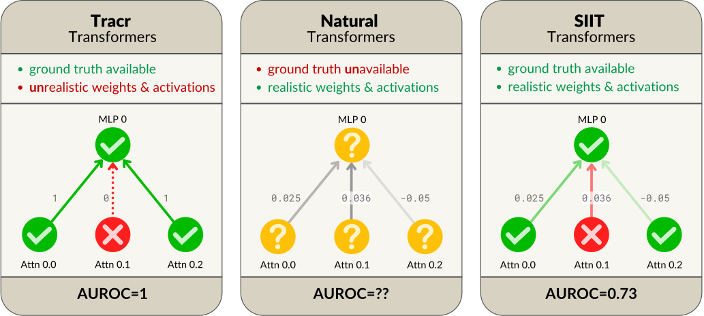
Figure 1: SIIT transformers implement a known ground-truth circuit, but their weights and activations are similar to the ones in naturally trained transformers, letting us measure, in a realistic setting, how accurate circuit discovery methods are at finding the true circuit.
图 1：SIIT Transformer 实现了已知的真实电路，但其权重和激活与自然训练得到的 Transformer 中的权重和激活相似，使我们能够在贴近真实情况的环境中，衡量电路发现方法寻找真实电路的准确程度。
The second way to obtain neural networks with known circuits is to construct them. Tracr [28] is a tool for compiling RASP programs [44] into standard decoder-only transformers. By construction, it outputs a model that implements the specified algorithm, making it suitable for evaluating MI methods. Unfortunately, Tracr-generated transformers are quite different from those trained using gradient descent: most of their weights and activations are zero, none of their features are in superposition, and they use only a small portion of their activations for the task at hand. Figure 2 shows how different the weights of a Tracr-generated transformer are from those of a transformer trained with gradient descent. This poses a very concrete threat to the validity of any evaluation that uses Tracr-generated transformers as subjects: we cannot tune the inductive biases of circuit evaluation algorithms with such unrealistic neural networks.
获得具有已知电路的神经网络的第二种方式是直接构造它们。Tracr [28] 是一种将 RASP 程序 [44] 编译为标准纯解码器 Transformer 的工具。其构造方式保证了输出模型实现指定的算法，因此适合用于评估 MI 方法。遗憾的是，Tracr 生成的 Transformer 与使用梯度下降训练得到的 Transformer 差异很大：它们的大多数权重和激活为零，所有特征均不处于叠加状态，而且它们仅使用一小部分激活来完成当前任务。图 2 展示了 Tracr 生成的 Transformer 的权重与使用梯度下降训练得到的 Transformer 的权重之间有多大差异。这对任何以 Tracr 生成的 Transformer 为研究对象的评估的有效性构成了十分具体的威胁：我们无法使用如此不贴近真实情况的神经网络来调整电路评估算法的归纳偏置。
1.1 Contributions1.1 贡献
In this work, we present InterpBench, a collection of $86$ semi-synthetic yet realistic transformers with known circuits for evaluating mechanistic interpretability techniques. We collected $85$ Tracr circuits plus 1 circuit from the literature (Indirect Object Identification [43]), and trained new transformers to implement these circuits using Strict Interchange Intervention Training (SIIT).
在本研究中，我们提出 InterpBench，这是一个由 $86$ 个具有已知电路的半合成但贴近真实情况的 Transformer 组成的集合，用于评估机制可解释性技术。我们收集了 $85$ 个 Tracr 电路以及来自文献的 1 个电路（间接宾语识别 [43]），并使用严格互换干预训练 (SIIT) 训练新的 Transformer 来实现这些电路。
SIIT is an extension of Interchange Intervention Training (IIT) [19]. Under IIT, we predefine which subcomponents of a low-level computational graph (the transformer to train) map to nodes of a high-level graph (the circuit). During training, we apply the same interchange interventions [18, 10] to both the low- and high-level models, and incentivize them to behave similarly with the loss.
SIIT 是互换干预训练 (IIT) [19] 的扩展。在 IIT 中，我们预先定义低层计算图（待训练的 Transformer）中的哪些子组件映射到高层图（电路）中的节点。在训练过程中，我们对低层模型和高层模型施加相同的互换干预 [18, 10]，并通过损失函数促使它们表现出相似的行为。
Our extension, SIIT, improves upon IIT by also intervening on subcomponents of the low-level model that are not mapped to any high-level node. This prevents the low-level model from using them to compute the output, ensuring the high-level model correctly represents the circuit the NN implements.
我们提出的扩展方法 SIIT 在 IIT 的基础上进一步对低层模型中未映射到任何高层节点的子组件实施干预。这可防止低层模型利用这些子组件计算输出，从而确保高层模型正确表征神经网络所实现的电路。
We make InterpBench models and the SIIT code used to train them all publicly available. In summary, the contributions of this article are:
我们公开发布了所有 InterpBench 模型以及用于训练这些模型的 SIIT 代码。本文的贡献概括如下：
• We present InterpBench, a benchmark of $86$ realistic semi-synthetic transformers with known circuits for evaluating mechanistic interpretability techniques.
• 我们提出了 InterpBench，这是一个包含 $86$ 个具有真实特征且电路已知的半合成 Transformer 的基准，用于评估机制可解释性技术。
• We introduce Strict Interchange Intervention Training (SIIT), an extension of IIT which also trains nodes not in the high-level graph. Using systematic ablations, we validate that SIIT correctly generates transformers with known circuits, even when IIT does not.
• 我们提出了严格交换干预训练（SIIT），这是 IIT 的一种扩展，还对不属于高层图的节点进行训练。通过系统性消融实验，我们验证了 SIIT 能够正确生成电路已知的 Transformer，即使 IIT 无法做到这一点。
• We show that SIIT-generated transformers are realistic enough to evaluate MI techniques, by checking whether circuit discovery methods behave similarly on SIIT-generated and natural transformers.
• 通过检验电路发现方法在 SIIT 生成的 Transformer 与自然 Transformer 上的表现是否相似，我们表明 SIIT 生成的 Transformer 足够贴近真实模型，可用于评估 MI 技术。
• We demonstrate the benchmark’s usefulness by evaluating five circuit discovery techniques: Automatic Circuit DisCovery (ACDC, 12), Subnetwork Probing (SP, 35) on nodes and edges, Edge Attribution Patching (EAP, 39), and EAP with integrated gradients (EAP-ig, 29). On InterpBench, the results conclusively favor ACDC over Node SP, showing that there is enough statistical evidence ($\textit{p-value}\approx 0.0004$) to tell them apart, whereas the picture in Conmy et al. [12] was much less clear. Interestingly, the results also show that EAP with integrated gradients is a strong contender against ACDC. In contrast, regular EAP performs poorly, which is understandable given the issues that have been raised about it [26].
• 我们通过评估五种电路发现技术，展示了该基准的实用性：自动电路发现（ACDC, 12）、针对节点和边的子网络探测（SP, 35）、边归因修补（EAP, 39），以及结合积分梯度的 EAP（EAP-ig, 29）。在 InterpBench 上，结果明确表明 ACDC 优于节点 SP，说明有充分的统计证据（$\textit{p-value}\approx 0.0004$）区分二者，而 Conmy et al. [12] 中的结果则远没有这么明确。有趣的是，结果还表明，结合积分梯度的 EAP 是 ACDC 的有力竞争者。相比之下，常规 EAP 表现较差，考虑到已有研究指出的相关问题 [26]，这一结果是可以理解的。
This article’s evaluation was performed on $16$ Tracr circuits generated by us (Section 4). Since then, InterpBench has been expanded with $69$ new models: $10$ trained on more Tracr circuits generated by us and $59$ trained on TracrBench circuits [41] (Appendix H).
本文的评估基于我们生成的 $16$ 个 Tracr 电路进行（第 4 节）。此后，InterpBench 又新增了 $69$ 个模型：其中 $10$ 个在我们生成的更多 Tracr 电路上训练，$59$ 个在 TracrBench 电路 [41] 上训练（附录 H）。
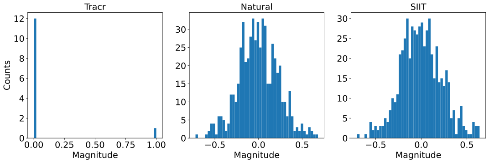
Figure 2: A histogram of the weights for the MLP output matrix in Layer 0 of a Tracr, SIIT, and “natural” transformer, i.e. trained by gradient descent to do supervised learning. All these transformers implement the frac_prevs task [28]. The weight distribution of an SIIT-trained transformer is much closer to the natural than the Tracr transformer. Yet, we know the ground-truth algorithm that the SIIT transformer implements. We provide the KL divergence between these histograms in Table 6.
图 2：Tracr Transformer、SIIT Transformer 和“自然”Transformer（即通过梯度下降进行监督学习训练的 Transformer）第 0 层中 MLP 输出矩阵的权重直方图。这些 Transformer 均实现了 frac_prevs 任务 [28]。与 Tracr Transformer 相比，经过 SIIT 训练的 Transformer 的权重分布更接近自然 Transformer。然而，我们知道 SIIT Transformer 所实现的真实算法。表 6 给出了这些直方图之间的 KL 散度。
2 Related work2 相关工作
Linearly compressed Tracr models.线性压缩的 Tracr 模型。
Lindner et al. [28] compress the residual stream of their Tracr-generated transformers using a linear autoencoder, to make them more realistic. However, this approach does not change the model’s structure, and components that are completely zero remain in the final model.
Lindner et al. [28] 使用线性自编码器压缩其通过 Tracr 生成的 Transformer 的残差流，使其更贴近真实模型。然而，这种方法不会改变模型的结构，完全为零的组件仍保留在最终模型中。
Features in MI.MI 中的特征。
While this work focuses on circuits, the current MI paradigm also studies features: hypothesized natural variables that the NN algorithm operates on. The most popular hypothesis is that features are most of the time inactive, and many features are in superposition in a smaller linear subspace [15, 36]. This inspired sparse autoencoders (SAEs) as the most popular feature extraction method [13, 6, 40, 34, 5]. SAEs produce many human-interpretable features that are mostly able to reconstruct the residual stream, but this does not imply that they are natural features for the NN. Indeed, some features seem to be circular and do not fit in the superposition paradigm [16]. Nevertheless, circuits on SAE features can be faithful and causally relevant [29].
尽管本研究聚焦于电路，但当前的 MI 范式也研究特征，即假设中神经网络算法所操作的自然变量。最流行的假设是，特征在大多数时候处于非激活状态，并且许多特征叠加在一个较小的线性子空间中 [15, 36]。这一假设启发了稀疏自编码器（SAE）的研究，使其成为最流行的特征提取方法 [13, 6, 40, 34, 5]。SAE 产生了许多人类可解释的特征，这些特征在很大程度上能够重构残差流，但这并不意味着它们是神经网络的自然特征。事实上，一些特征似乎呈环形，不符合叠加范式 [16]。尽管如此，基于 SAE 特征构建的电路仍可以具有忠实性和因果相关性 [29]。
A benchmark that pairs NNs with their known circuits is also a good way to test feature discovery algorithms (like SAEs): the algorithms should naturally recover the values of computational nodes of the true circuit. Conversely, examining how SIIT-trained models represent their circuits’ concepts could help us understand how natural NNs represent features. This article omits the comparison because its models only perform one task, and thus have too few features to show superposition.
将神经网络与其已知电路配对的基准也是检验特征发现算法（如 SAE）的良好方式：这些算法应当自然地恢复真实电路中计算节点的取值。反过来，考察经过 SIIT 训练的模型如何表征其电路中的概念，可以帮助我们理解自然神经网络如何表征特征。本文未进行这一比较，因为本文的模型仅执行一项任务，因此特征数量过少，无法呈现叠加现象。
Other MI benchmarks.其他 MI 基准。
Ravel [24] is a dataset of prompts containing named entities with different attributes that can be independently varied. Its purpose is to evaluate methods which can causally isolate the representations of these attributes in the NN. Orion [42] is a collection of retrieval tasks to investigate how large language models (LLMs) follow instructions. CasualGym [3] is a benchmark of linguistic tasks for evaluating interpretability methods on their ability to find specific linear features in LLMs. Find [37] is a dataset and evaluation protocol for tools which automatically describe model neurons or other components [4, 38]. The test subject must accurately describe a function, based on interactively querying input-output pairs from it.
Ravel [24] 是一个提示数据集，其中包含具有不同属性的命名实体，这些属性可以独立变化。其目的是评估能够从因果层面分离神经网络中这些属性表征的方法。Orion [42] 是一组检索任务，用于研究大型语言模型（LLM）如何遵循指令。CasualGym [3] 是一个语言任务基准，用于评估可解释性方法在 LLM 中寻找特定线性特征的能力。Find [37] 是一个数据集和评估协议，用于评估自动描述模型神经元或其他组件的工具 [4, 38]。受测工具必须通过交互式查询某个函数的输入输出对，准确描述该函数。
We see InterpBench as complementary to Orion, Ravel, and CausalGym, and slightly overlapping with Find. InterpBench is very general in scope: its purpose is to evaluate any interpretability methods which discover or evaluate circuits or features. However, InterpBench is not suitable for evaluating natural language descriptions of functions like Find is, and its NNs are about as simple as Find functions.
我们认为，InterpBench 与 Orion、Ravel 和 CausalGym 互为补充，并与 Find 略有重叠。InterpBench 的适用范围非常广泛：其目的是评估任何用于发现或评估电路或特征的可解释性方法。然而，InterpBench 并不像 Find 那样适合评估对函数的自然语言描述，而且其中的神经网络与 Find 中的函数大致同样简单。
3 Strict Interchange Intervention Training3 严格互换干预训练
An interchange intervention [17, 18], or resample ablation [25], returns the output of the model on a base input when some of its internal activations have been replaced with activations that correspond to a source input. Formally, an interchange intervention $\textsc{IntInv}(\mathcal{M},\textit{base}{},\textit{source}{},V)$ takes a model $\mathcal{M}$, an input base, an input source, and a variable $V$ (i.e., a node in the computational graph of the model), and returns the output of the model $\mathcal{M}$ for the input base, except that the activations of $V$ are set to the value they would have if the input were source. This same definition can be extended to intervene on a set of variables V, where the activations of all variables in V are replaced. Geiger et al. [19] define Interchange Intervention loss as:
互换干预 [17, 18]，也称重采样消融 [25]，是指将模型的部分内部激活替换为与源输入对应的激活后，返回模型在基础输入上的输出。形式上，互换干预 $\textsc{IntInv}(\mathcal{M},\textit{base}{},\textit{source}{},V)$ 接收一个模型 $\mathcal{M}$、一个输入 base、一个输入 source 和一个变量 $V$（即模型计算图中的一个节点），并返回模型 $\mathcal{M}$ 在输入 base 上的输出，但将 $V$ 的激活设置为输入为 source 时的取值。同一定义也可扩展至对变量集合 V 的干预，此时 V 中所有变量的激活均被替换。Geiger et al. [19] 将互换干预损失定义为：
where $\mathcal{M}^{H}$ is the high-level model, $\mathcal{M}^{L}$ is the low-level model, $V^{H}$ is a high-level variable, $\Pi(V^{H})$ is the set of low-level variables that are aligned with (mapped to) $V^{H}$, and Loss is some loss function, such as cross-entropy or mean squared error. We use the notation $\mathcal{M}(\textit{base})$ to denote the output of the model $\mathcal{M}$ when run without interventions on input base.
其中，$\mathcal{M}^{H}$ 是高层模型，$\mathcal{M}^{L}$ 是低层模型，$V^{H}$ 是高层变量，$\Pi(V^{H})$ 是与 $V^{H}$ 对齐（映射至 $V^{H}$）的低层变量集合，Loss 是某种损失函数，例如交叉熵或均方误差。我们使用记号 $\mathcal{M}(\textit{base})$ 表示模型 $\mathcal{M}$ 在输入 base 上不施加干预运行时的输出。
The main shortcoming of the above definition is that, by sampling only high-level variables $V^{H}$ and intervening on the low-level variables that are aligned with it (i.e., $\Pi(V^{H})$), IIT never intervenes on low-level nodes that are not aligned with any node in the high-level model. This can lead to scenarios in which the nodes that are not intervened during training end up performing non-trivial computations that affect the low-level model’s output, even when the nodes that are aligned with the high-level model are correctly implemented and causally consistent.
上述定义的主要不足在于，IIT 仅采样高层变量 $V^{H}$，并对与其对齐的低层变量（即 $\Pi(V^{H})$）施加干预，因此从不干预那些未与高层模型中任何节点对齐的低层节点。这可能导致如下情况：即使与高层模型对齐的节点得到了正确实现且具有因果一致性，训练期间未受到干预的节点最终仍会执行影响低层模型输出的非平凡计算。
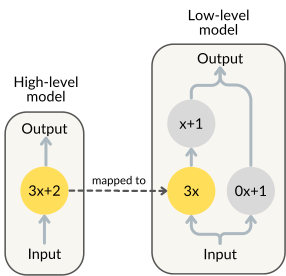
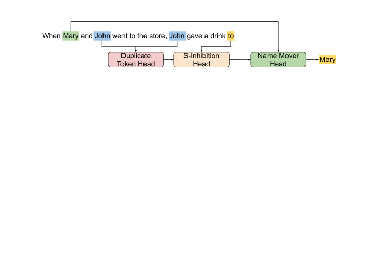
Figure 3: Example of a low-level model that has a perfect accuracy, with aligned low-level nodes (in yellow) that are causally consistent with the high-level model, but has non-aligned nodes (in grey) that affect the output.
图 3：一个准确率达到满分的低层模型示例，其中对齐的低层节点（黄色）与高层模型具有因果一致性，但未对齐的节点（灰色）会影响输出。
As an example, suppose that we have a high-level model $\mathcal{M^{H}}$ such that $\mathcal{M^{H}}(x)=3x+2$, and we want to train a low-level model $\mathcal{M^{L}}$ that has three nodes, only one of which is part of the circuit. If we train this low-level model using IIT, we may end up with a scenario like the one depicted in Figure 4. In this example, even though the low-level model has perfect accuracy and the aligned nodes are causally consistent, the non-aligned nodes still affect the output in a non-trivial way. This shows some of the issues that arise when using IIT: aligned low-level nodes may not completely contain the expected high-level computation, and non-aligned low-level nodes may contain part of the high-level computation.
例如，假设我们有一个高层模型 $\mathcal{M^{H}}$，满足 $\mathcal{M^{H}}(x)=3x+2$，并且希望训练一个包含三个节点的低层模型 $\mathcal{M^{L}}$，其中只有一个节点属于该电路。如果使用 IIT 训练这个低层模型，最终可能出现图 4 所示的情况。在此示例中，尽管低层模型的准确率达到满分，且对齐节点具有因果一致性，未对齐节点仍以非平凡的方式影响输出。这揭示了使用 IIT 时出现的一些问题：对齐的低层节点可能未完整包含预期的高层计算，而未对齐的低层节点可能包含部分高层计算。
To correct this shortcoming, we propose an extension to IIT called Strict Interchange Intervention Training (SIIT). Its pseudocode is shown in Algorithm 1 (Appendix A). The main difference between IIT and SIIT is that, in SIIT, we also sample low-level variables that are not aligned with any high-level variable. This allows us to penalize the low-level model for modifying the output when intervening on these non-aligned variables. We implement this modification as a new loss function (Strictness loss) that is included in the training loop of SIIT. Formally:
为弥补这一不足，我们提出了 IIT 的一种扩展，称为严格互换干预训练（SIIT）。其伪代码见算法 1（附录 A）。IIT 与 SIIT 的主要区别在于，在 SIIT 中，我们还会采样未与任何高层变量对齐的低层变量。这使我们能够在对这些未对齐变量施加干预时，惩罚低层模型改变输出的行为。我们将这一修改实现为一个新的损失函数（严格性损失），并将其纳入 SIIT 的训练循环。形式上：
where $y_{b}$ is the correct output for input $b$ and $V^{L}$ is a low-level variable that is not aligned with any high-level variable $V^{H}$. In other words, this loss incentivizes the low-level model to avoid performing non-trivial computations for this task on low-level components that are not aligned with any high-level variable. This makes the non-aligned components constant for the inputs in the task distribution, but not necessarily for the ones outside of it. Notice however that under the Strictness loss the non-aligned components can still contribute to the output in a constant way, as long as they do not change the output when intervened on. The extent of this effect is analyzed in Appendix B.
其中，$y_{b}$ 为输入 $b$ 的正确输出，$V^{L}$ 为未与任何高层变量 $V^{H}$ 对齐的低层变量。换言之，该损失促使低层模型避免在未与任何高层变量对齐的低层组件上执行与此任务相关的非平凡计算。这使得未对齐组件对于任务分布内的输入保持恒定，但对于任务分布外的输入则未必如此。然而，请注意，在严格性损失下，只要对未对齐组件施加干预时不会改变输出，这些组件仍可通过恒定的方式对输出作出贡献。附录 B 分析了这一效应的程度。
As proposed by Geiger et al. [19], we also include in Algorithm 1 a behavior loss that ensures the model is not overfitting to the IIT and Strictness losses. The behavior loss is calculated by running the low-level model without any intervention and comparing the output to the correct output.
按照 Geiger et al. [19] 的提议，我们还在算法 1 中纳入了行为损失，以确保模型不会对 IIT 损失和严格性损失过拟合。行为损失通过在不施加任何干预的情况下运行低层模型，并将其输出与正确输出进行比较来计算。
4 InterpBench4 InterpBench
InterpBench is composed of $85$ semi-synthetic transformers generated by applying SIIT to Tracr-generated transformers and their corresponding circuits, plus a semi-synthetic transformer trained on GPT-2 and a simplified version of its IOI circuit [43]. This benchmark can be freely accessed and downloaded from HuggingFace (see Appendix E). We generated $26$ RASP programs using few-shot prompts on GPT-4, and collected $59$ RASP programs from TracrBench [41].
InterpBench 由 $85$ 个半合成 Transformer，以及一个基于 GPT-2 及其 IOI 电路的简化版本 [43] 训练得到的半合成 Transformer 组成；前者通过将 SIIT 应用于 Tracr 生成的 Transformer 及其对应电路而生成。该基准可从 HuggingFace 免费访问和下载（见附录 E）。我们使用针对 GPT-4 的小样本提示生成了 $26$ 个 RASP 程序，并从 TracrBench [41] 中收集了 $59$ 个 RASP 程序。
The architecture for the SIIT-generated transformers was made more realistic (compared to the original Tracr ones) by increasing the number of attention heads up to 4 (usually only 1 or 2 in Tracr-generated transformers), which lets us define some heads as not part of the circuit, and by halving the internal dimension of attention heads. The residual stream size on the new transformers is calculated as $d_{\text{head}}\times n_{\text{heads}}$, and the MLP size is calculated as $d_{\text{model}}\times 4$.
通过将注意力头的数量增加至最多 4 个（Tracr 生成的 Transformer 通常只有 1 或 2 个），并将注意力头的内部维度减半，使 SIIT 生成的 Transformer 的架构更加接近真实情况（相较于原始的 Tracr 生成的 Transformer）；增加注意力头的数量使我们能够将某些头定义为不属于电路的部分。新 Transformer 的残差流大小按 $d_{\text{head}}\times n_{\text{heads}}$ 计算，MLP 大小按 $d_{\text{model}}\times 4$ 计算。
Using IIT’s terminology, the Tracr-generated transformers are the high-level models, the SIIT-generated transformers are the low-level ones, and the variables are attention heads and MLPs (i.e., nodes in the computational graph). Each layer in the high-level model is mapped to the same layer in the low-level model. High-level attention heads are mapped to randomly selected low-level attention heads in the same layer. High-level MLPs are mapped to low-level MLPs in the same layer.
按照 IIT 的术语，Tracr 生成的 Transformer 是高层模型，SIIT 生成的 Transformer 是低层模型，变量则为注意力头和 MLP（即计算图中的节点）。高层模型中的每一层都映射到低层模型中的同一层。高层注意力头映射到同一层中随机选取的低层注意力头。高层 MLP 映射到同一层中的低层 MLP。
We train InterpBench’s main $16$ SIIT models by using Algorithm 1 as described in Section 3, fixing the $\text{Weight}_{SIIT}$ to values between $0.4$ and $10$, depending on the task. Both the $\text{Weight}_{IIT}$ and $\text{Weight}_{behavior}$ are set to $1$. We use Adam as the optimizer for all models, with a fixed learning rate of $0.001$, batch size of $512$, and Beta coefficients of $(0.9,0.999)$. All models are trained until they reach $100\%$ Interchange Intervention Accuracy (IIA) and $100\%$ Strict Interchange Intervention Accuracy (SIIA) on the validation dataset. IIA, as defined by Geiger et al. [21], measures the percentage of times that the low-level model has the same output as the high-level model when both are intervened on the same aligned variables. The Strict version of this metric measures the percentage of times that the low-level model’s output remains unchanged when intervened on non-aligned variables.
我们按照第 3 节所述，使用算法 1 训练 InterpBench 的 $16$ 个主要 SIIT 模型，并根据任务将 $\text{Weight}_{SIIT}$ 固定为 $0.4$ 至 $10$ 之间的值。$\text{Weight}_{IIT}$ 和 $\text{Weight}_{behavior}$ 均设为 $1$。所有模型均使用 Adam 作为优化器，学习率固定为 $0.001$，批量大小为 $512$，Beta 系数为 $(0.9,0.999)$。所有模型均训练至其在验证数据集上的互换干预准确率（IIA）达到 $100\%$，且严格互换干预准确率（SIIA）达到 $100\%$。根据 Geiger et al. [21] 的定义，IIA 衡量的是：当对低层模型和高层模型中相同的对齐变量均进行干预时，低层模型与高层模型输出相同的次数所占的百分比。该指标的严格版本衡量的是：当对未对齐变量进行干预时，低层模型输出保持不变的次数所占的百分比。
The training dataset is composed of 20k-120k randomly sampled inputs, depending on each task. The validation dataset is randomly sampled to achieve 20% of the training dataset size. The expected output is generated by running the Tracr-generated transformer on each input sequence. The specific loss function to compare the outputs depends on the task: cross-entropy for Tracr categorical tasks, and mean squared error for Tracr regression tasks.
训练数据集由随机采样的 20k-120k 个输入组成，具体数量取决于各项任务。验证数据集通过随机采样构建，其大小为训练数据集的 20%。预期输出通过在每个输入序列上运行 Tracr 生成的 Transformer 得到。用于比较输出的具体损失函数取决于任务：Tracr 分类任务使用交叉熵，Tracr 回归任务使用均方误差。
To show that SIIT can also train transformers with non-RASP circuits coded manually, InterpBench includes a model trained on a simplified version of the IOI task and the circuit hypothesized by Wang et al. [43], shown in Figure 4. We train a semi-synthetic transformer with $6$ layers and $4$ heads per layer, $d_{\text{model}}=64$, and $d_{\text{head}}=16$. Each high-level node in the simplified IOI circuit is mapped to an entire layer in the low-level model. We train this transformer using the same algorithm and hyperparameters as for the Tracr-generated transformers, but with a different loss function. We apply the IIT and SIIT losses to the last token of the output sequence, and the cross-entropy loss to all other tokens. The final loss is a weighted average of these losses, with the IIT and SIIT losses upweighted by a factor of $10$. The hyperparameters remained the same during the experiments.
为表明 SIIT 也能训练具有手动编码的非 RASP 电路的 Transformer，InterpBench 包含了一个基于 IOI 任务的简化版本以及 Wang et al. [43] 假设的电路训练得到的模型，如图 4 所示。我们训练了一个具有 $6$ 层、每层 $4$ 个头、$d_{\text{model}}=64$ 且 $d_{\text{head}}=16$ 的半合成 Transformer。简化 IOI 电路中的每个高层节点都映射到低层模型中的一整个层。我们采用与训练 Tracr 生成的 Transformer 时相同的算法和超参数来训练该 Transformer，但使用不同的损失函数。我们将 IIT 和 SIIT 损失应用于输出序列的最后一个词元，将交叉熵损失应用于其余所有词元。最终损失为这些损失的加权平均值，其中 IIT 和 SIIT 损失的权重提高至原来的 $10$ 倍。实验期间，超参数保持不变。
The semi-synthetic transformers included in InterpBench were trained on a single NVIDIA RTX A6000 GPU. The training time varied depending on the task and the complexity of the circuit but was usually around 1 to 8 hours.
InterpBench 中包含的半合成 Transformer 均在单块 NVIDIA RTX A6000 GPU 上训练。训练时间随任务和电路复杂度而变化，但通常约为 1 至 8 小时。
Appendix E explains how to download InterpBench and the license under which it is released. Appendix G contains a detailed description of the Tracr tasks included in the benchmark, and Appendix F provides instructions on how to use it. Appendix H provides the training details and task description for the models that were not included in this article’s evaluation. Further documentation of each task (e.g., training hyperparameters) can be found in the structured metadata file on the HuggingFace repository, and their source code is publicly available on the GitHub repository.
附录 E 说明了如何下载 InterpBench 及其发布所采用的许可证。附录 G 详细描述了该基准中包含的 Tracr 任务，附录 F 提供了该基准的使用说明。附录 H 提供了未纳入本文评估的模型的训练细节和任务描述。各项任务的更多文档（例如训练超参数）可在 HuggingFace 仓库中的结构化元数据文件中找到，其源代码则在 GitHub 仓库中公开提供。
5 Evaluation5 评估
To investigate the effectiveness of SIIT and the usefulness of the proposed benchmark, we conducted an evaluation on the 16 main models and IOI to answer the following research questions (RQs):
为研究 SIIT 的有效性和所提出基准的实用性，我们对 16 个主要模型和 IOI 进行了评估，以回答以下研究问题（RQ）：
RQ1 (IIT): Do the transformers trained using IIT correctly implement the desired circuits?
RQ1（IIT）：使用 IIT 训练的 Transformer 是否正确实现了预期电路？
RQ2 (SIIT): Do the transformers trained using SIIT correctly implement the desired circuits?
RQ2（SIIT）：使用 SIIT 训练的 Transformer 是否正确实现了预期电路？
RQ3 (Realism): Are the transformers trained using SIIT realistic?
RQ3（真实性）：使用 SIIT 训练的 Transformer 是否具有真实性？
RQ4 (Benchmark): Are the transformers trained using SIIT useful for benchmarking mechanistic interpretability techniques?
RQ4（基准）：使用 SIIT 训练的 Transformer 是否可用于对机制可解释性技术进行基准评测？
5.1 Results5.1 结果
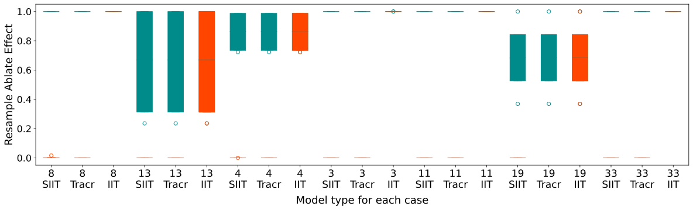
Figure 5: Average effect on accuracy for nodes in the circuit (green) and out of the circuit (red) for the models of $7$ randomly sampled tasks in the benchmark. Boxplots display, for each task and model, the average proportion of model outputs that change when intervening on nodes. For all regression tasks, we deem an intervention to have an effect when the new scalar output differs by $0.05$ or more from the original. We can see that for Tracr and SIIT models, nodes not in the circuit have much lower effects, but that is not the case for IIT models.
图 5：基准中随机抽取的 $7$ 个任务所对应的模型中，回路内（绿色）和回路外（红色）节点对准确率的平均影响。箱线图展示了对于每个任务和模型，干预节点时模型输出发生变化的平均比例。对于所有回归任务，当新的标量输出与原始输出相差 $0.05$ 或以上时，我们认为干预产生了影响。可以看到，对于 Tracr 和 SIIT 模型，回路外节点的影响要小得多，但 IIT 模型并非如此。
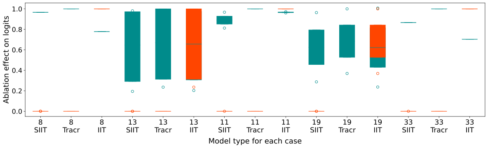
Figure 6: Normalized effect on KL divergence for nodes in the circuit (green) and out of the circuit (red) for the models of $5$ randomly sampled categorical tasks in the benchmark. Boxplots display, for each task and model, the differences in KL divergence before and after intervening on each node. We can see that in Tracr and SIIT nodes are very well separated into in/out of the circuit by their effect size, whereas that is not the case for IIT models.
图 6：基准中随机抽取的 $5$ 个分类任务所对应的模型中，回路内（绿色）和回路外（红色）节点对 KL 散度的归一化影响。箱线图展示了对于每个任务和模型，干预各节点前后 KL 散度的差异。可以看到，在 Tracr 和 SIIT 中，回路内外的节点可以根据其效应大小得到非常清晰的区分，而 IIT 模型则并非如此。
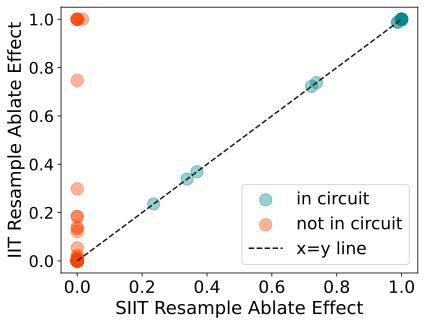
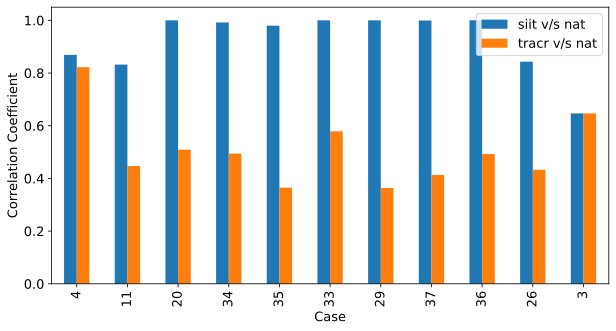
Figure 7: Scatter plot comparing the effect for nodes in the circuit (green) and not in the circuit (red) for IIT and SIIT transformers on the $16$ main tasks. The x and y axes display the average node effect when resample ablating on IIT and SIIT models, respectively. For each task, both models have a one-one node correspondence. Some IIT nodes that are not in the circuit have much higher effects than they should have.
图 7：散点图，比较了在 $16$ 个主要任务上，IIT 和 SIIT Transformer 中回路内（绿色）与回路外（红色）节点的效应。x 轴和 y 轴分别表示对 IIT 和 SIIT 模型进行重采样消融时的平均节点效应。对于每个任务，两个模型的节点之间均存在一一对应关系。IIT 中一些回路外节点的效应远高于其应有水平。
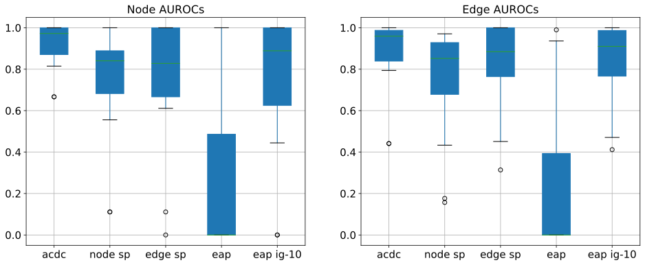
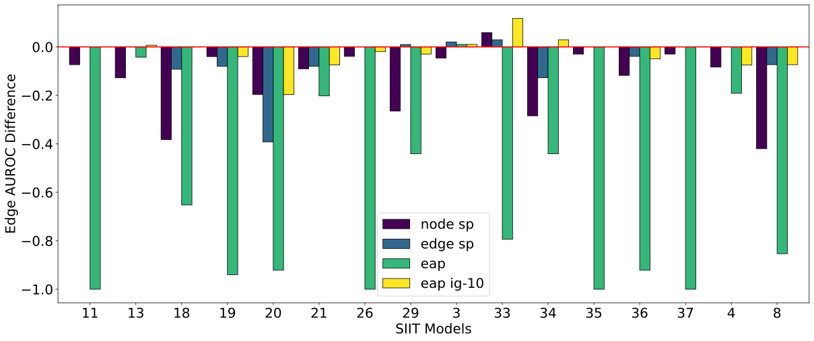
(a)
(a)
RQ1 & RQ2.RQ1 与 RQ2。
In this evaluation, we compare the semi-synthetic transformers trained using IIT and SIIT. Unless specified, the SIIT models are the $16$ main ones from InterpBench (Section 4). We use the same setup for IIT models, except that we set the $\text{Weight}_{SIIT}$ to $0$.
在本次评估中，我们比较了使用 IIT 和 SIIT 训练的半合成 Transformer。除非另有说明，SIIT 模型均指 InterpBench 中的 $16$ 个主要模型（第 4 节）。我们对 IIT 模型采用相同的设置，唯一区别是将 $\text{Weight}_{SIIT}$ 设为 $0$。
To understand if a trained low-level model correctly implements a circuit we need to check that (1) the low-level model has the same output as the high-level model when intervening on aligned variables, and that (2) the non-circuit nodes do not affect the output. As we mentioned in Section 4, all low-level models in our experiments are trained to achieve 100% IIA on the validation sets, which ensures that the first condition is always met.
为了确定训练后的低层模型是否正确实现了某个回路，我们需要检查：(1) 在对对齐变量进行干预时，低层模型与高层模型的输出是否相同；(2) 非回路节点是否不影响输出。如第 4 节所述，我们实验中的所有低层模型均经过训练，在验证集上达到 100% IIA，这确保了第一个条件始终得到满足。
We answer the second condition by measuring the node effect and normalised KL divergence after intervening on each node in the model. Node effect measures the percentage of times that the low-level model changes its output when intervened on a specific node. As mentioned before, a node that is not part of the circuit should not affect the output of the model and thus should have a low node effect. Formally, for a node $V$ in a model $\mathcal{M}$, and a pair of inputs $(x_{b},x_{s})$ with corresponding labels ($y_{b}$, $y_{s}$), we define the node effect as follows:
我们通过测量对模型中各节点进行干预后的节点效应和归一化 KL 散度，来检验第二个条件。节点效应衡量的是对特定节点进行干预时，低层模型输出发生变化的次数所占的百分比。如前所述，不属于回路的节点不应影响模型的输出，因此其节点效应应较低。形式上，对于模型 $\mathcal{M}$ 中的节点 $V$，以及一对输入 $(x_{b},x_{s})$ 及其对应标签（$y_{b}$、$y_{s}$），我们将节点效应定义如下：
where $\mathds{1}[\cdot]$ is the indicator function. The normalized KL divergence is:
其中，$\mathds{1}[\cdot]$ 为指示函数。归一化 KL 散度为：
If a semi-synthetic transformer correctly implements a Tracr’s circuit, the effect of all aligned nodes will be similar to their corresponding counterparts in the Tracr model. For the KL divergence, it is not always possible to have a perfect match with the Tracr-generated transformer, as Tracr does not minimize the cross-entropy loss in categorical programs but only fixes the weights so that they output the expected labels. Still, we expect a clear separation between nodes in and out of the circuit.
如果半合成 Transformer 正确实现了 Tracr 的回路，那么所有对齐节点的效应都将与 Tracr 模型中的对应节点相似。对于 KL 散度，并不总能与 Tracr 生成的 Transformer 完全匹配，因为 Tracr 在分类程序中并不最小化交叉熵损失，而只是设定权重，使其输出预期标签。尽管如此，我们仍预期回路内外的节点之间会存在清晰的区分。
Figure 5 shows the node effect for nodes in and out of the circuit for $7$ randomly sampled tasks in the benchmark, averaged over a test dataset. Each boxplot shows the analysis for a Tracr, IIT, or SIIT transformer on a different task. We can see that the boxplots for IIT and Tracr are different, with the IIT ones consistently having a high node effect for nodes that are not in the circuit (red boxplots). On the other hand, the SIIT boxplots are more similar to the Tracr ones, with a low node effect for nodes that are not in the circuit, and a high node effect for nodes that are in the circuit.
图 5 展示了基准中随机抽取的 $7$ 个任务中，回路内外节点在测试数据集上取平均后的节点效应。每个箱线图展示了 Tracr、IIT 或 SIIT Transformer 在不同任务上的分析结果。可以看到，IIT 与 Tracr 的箱线图存在差异，IIT 中回路外节点的节点效应始终较高（红色箱线图）。另一方面，SIIT 的箱线图与 Tracr 的更为相似，回路外节点的节点效应较低，回路内节点的节点效应较高。
Similarly, Figure 6 shows the average normalized KL divergence for nodes in and out of the circuit for $5$ randomly sampled categorical tasks in the benchmark. Again, most of the boxplots for IIT have high KL divergence for nodes that are not in the circuit, while the SIIT boxplots have low values for these nodes. We can see that even though the SIIT transformer does not exactly match the Tracr behavior, there is still a clear separation between nodes in the circuit and those not in the circuit, which does not happen for the IIT transformers. It is worth pointing out that the higher error bar across cases for KL divergence is due to the fact that we are optimizing over accuracy instead of matching the expected distribution over labels.
类似地，图 6 展示了基准中随机抽取的 $5$ 个分类任务中，回路内外节点的平均归一化 KL 散度。同样，IIT 的大多数箱线图显示，回路外节点的 KL 散度较高，而 SIIT 箱线图中这些节点的值较低。可以看到，尽管 SIIT Transformer 的行为并不与 Tracr 完全一致，但回路内节点与回路外节点之间仍存在清晰的区分，而 IIT Transformer 则没有出现这种情况。需要指出的是，各种情况下 KL 散度的误差条较大，是因为我们优化的是准确率，而非使标签分布与预期分布相匹配。
Finally, Figure 8 shows a scatter plot comparing the average node effect for nodes in and out of the circuit for IIT and SIIT transformers for the $16$ main tasks in the benchmark. We can see that there are several nodes not in the circuit that have a higher node effect for IIT than for SIIT.
最后，图 8 展示了一幅散点图，比较了基准中 $16$ 个主要任务的 IIT 和 SIIT Transformer 中电路内外节点的平均节点效应。可以看到，对于若干不属于电路的节点，其在 IIT 中的节点效应高于在 SIIT 中的节点效应。
RQ 1: IIT-generated transformers do not correctly implement the desired circuits: nodes that are not in the circuit affect the output.
RQ 1：IIT 生成的 Transformer 未能正确实现预期电路：不属于电路的节点会影响输出。
RQ 2: SIIT-generated transformers correctly implement the desired circuits: nodes in the circuit have a high effect on the output, while nodes that are not in the circuit do not affect the output.
RQ 2：SIIT 生成的 Transformer 正确实现了预期电路：电路内的节点对输出有较大影响，而不属于电路的节点不影响输出。
Appendix B extends Figure 5 to the main $16$ tasks in InterpBench, for SIIT and the original circuit only. It also repeats the experiments but with mean and zero ablations [46]. Using another type of ablation is a robustness check for InterpBench, which was trained with interchange interventions. Under mean ablations, only nodes in the circuit have an effect, but that is not the case under zero ablations. This may indicate that InterpBench circuits are not entirely true, but also matches the widely held notion that zero ablation is unreliable [46].
附录 B 将图 5 扩展至 InterpBench 中的 $16$ 个主要任务，仅涵盖 SIIT 和原始电路。该附录还使用均值消融和零值消融重复了这些实验 [46]。采用另一种消融方式是对 InterpBench 的稳健性检验，因为它是通过互换干预训练得到的。在均值消融下，只有电路内的节点会产生影响，但在零值消融下则并非如此。这可能表明 InterpBench 中的电路并非完全真实，但也符合零值消融不可靠这一广泛认可的观点 [46]。
RQ3.RQ3。
To analyze the realism of the trained models, we run ACDC [12] on Tracr, SIIT, and “naturally” trained transformers (i.e., using supervised learning). We measure the accuracy of these models after mean-ablating [46] all the nodes rejected by ACDC, i.e. the ones that ACDC deems to not be in the circuit. This lets us check whether SIIT and “natural” models behave similarly from the point of view of circuit discovery techniques. A more realistic model should have a score similar to the transformers trained with supervised learning. Figure 8 displays the difference in correlation coefficients when comparing the accuracy of the SIIT and Tracr models to the “natural” models, showing that SIIT models have a higher correlation with “natural” models than Tracr ones. Figure 18 (Appendix D) suggests that circuits in SIIT models are harder to find than those in Tracr models.
为了分析所训练模型的真实性，我们在 Tracr、SIIT 和“自然”训练的 Transformer（即使用监督学习训练的 Transformer）上运行 ACDC [12]。我们对 ACDC 排除的所有节点，即 ACDC 判定为不属于电路的节点，进行均值消融 [46]，然后测量这些模型的准确率。这样便可检验，从电路发现技术的角度来看，SIIT 模型与“自然”模型的行为是否相似。更真实的模型应具有与使用监督学习训练的 Transformer 相近的得分。图 8 展示了分别将 SIIT 和 Tracr 模型的准确率与“自然”模型的准确率进行比较时所得相关系数的差值，表明 SIIT 模型与“自然”模型的相关性高于 Tracr 模型。图 18（附录 D）表明，SIIT 模型中的电路比 Tracr 模型中的电路更难发现。
Another proxy for realism is: do the weights of “natural” and SIIT models follow similar distributions? Figure 2 shows a histogram of the weights for the MLP output matrix in Layer 0 of a Tracr, SIIT, and “natural” transformer. The SIIT and “natural” weight distributions are very similar.
衡量真实性的另一个间接指标是：“自然”模型和 SIIT 模型的权重是否服从相似的分布？图 2 展示了 Tracr、SIIT 和“自然”Transformer 第 0 层中 MLP 输出矩阵的权重直方图。SIIT 与“自然”模型的权重分布非常相似。
RQ 3: SIIT-generated transformers are more realistic than Tracr ones, with behavior similar to the transformers trained using supervised learning.
RQ 3：SIIT 生成的 Transformer 比 Tracr 生成的 Transformer 更真实，其行为与使用监督学习训练的 Transformer 相似。
RQ4.RQ4。
To showcase the usefulness of the benchmark, we run ACDC [12], Subnetwork Probing (SP) [35], edgewise SP, Edge Attribution Patching (EAP) [39], and EAP with integrated gradients [29] on the SIIT transformers and compare their performance. Edgewise SP is similar to regular SP, but instead of applying masks over all available nodes, they are applied over all available edges. We compute the Area Under the Curve (AUC) for the edge-level ROC as a measure of their performance.
为了展示该基准的实用性，我们在 SIIT Transformer 上运行 ACDC [12]、子网络探测（SP）[35]、逐边 SP、边归因修补（EAP）[39] 以及结合积分梯度的 EAP [29]，并比较它们的性能。逐边 SP 与常规 SP 类似，但其掩码应用于所有可用边，而非所有可用节点。我们计算边级 ROC 的曲线下面积（AUC），以此衡量它们的性能。
Figure 9(a) displays boxplots of the AUC ROCs, and Figure 9(b) shows the difference in AUC ROC for all circuit discovery techniques against ACDC. For measuring statistical significance, we rely on the well-established Wilcoxon-Mann-Whitney U-test and Vargha-Delaney $A_{12}$ effect size [2]. From these tests, we get that ACDC is statistically different ($\textit{p-value}<0.05$) to all the other algorithms except EAP with integrated gradients, with an effect size $A_{12}$ ranging from $0.54$ to $0.91$.
图 9(a) 展示了 ROC AUC 的箱线图，图 9(b) 展示了所有电路发现技术相对于 ACDC 的 ROC AUC 差值。为衡量统计显著性，我们采用成熟的 Wilcoxon-Mann-Whitney U 检验和 Vargha-Delaney $A_{12}$ 效应量 [2]。这些检验表明，除结合积分梯度的 EAP 外，ACDC 与所有其他算法均存在统计显著差异（$\textit{p-value}<0.05$），效应量 $A_{12}$ 的范围为 $0.54$ 至 $0.91$。
Interestingly, previous evaluations of performance between SP and ACDC on a small number of tasks, including Tracr ones, did not show a significant difference between the two – SP was about as good as ACDC, achieving very similar ROC AUC across tasks when evaluated on manually discovered circuits [12]. On the other hand, results on InterpBench clearly show that ACDC outperforms SP on small models that perform algorithmic tasks ($\textit{p-value}\approx 0.0004$ and large effect size $\hat{A}_{12}\approx 0.742$).
有趣的是，此前在少量任务（包括 Tracr 任务）上对 SP 和 ACDC 进行的性能评估并未显示二者存在显著差异——在以人工发现的电路进行评估时，SP 与 ACDC 的表现大致相当，在各项任务上取得了非常相近的 ROC AUC [12]。另一方面，InterpBench 上的结果清楚地表明，对于执行算法任务的小型模型，ACDC 优于 SP（$\textit{p-value}\approx 0.0004$，且效应量较大，$\hat{A}_{12}\approx 0.742$）。
One difference between ACDC and other techniques is that this method uses causal interventions to find out which edges are part of the circuit, while SP and EAP rely on the gradients of the model. After manual inspection, we found that the gradients of the SIIT models were very small, possibly due to these models being trained up to 100% IIA and 100% SIIA, which could explain why SP and regular EAP are not as effective as ACDC. This, however, does not seem to negatively affect EAP with integrated gradients, since the results show that this method is not statistically different from ACDC ($\textit{p-value}\geq 0.05$), which means that it is as good as ACDC for the tasks in the benchmark.
ACDC 与其他技术的一个区别在于，该方法使用因果干预来确定哪些边属于电路，而 SP 和 EAP 则依赖模型的梯度。经过人工检查，我们发现 SIIT 模型的梯度非常小，这可能是因为这些模型经过训练后达到了 100% IIA 和 100% SIIA，这也可能解释了为何 SP 和常规 EAP 不如 ACDC 有效。然而，这似乎并未对结合积分梯度的 EAP 产生负面影响，因为结果表明，该方法与 ACDC 不存在统计显著差异（$\textit{p-value}\geq 0.05$），这意味着在该基准中的任务上，其表现与 ACDC 相当。
There are some cases where ACDC is not the best technique (Figure 9(b)). Notably, in Case 33, ACDC is outperformed by all the other techniques except EAP. We leave investigating why to future work.
在某些情况下，ACDC 并非最佳技术（图 9(b)）。特别是在案例 33 中，除 EAP 外，所有其他技术的表现均优于 ACDC。我们将其原因的探究留待未来工作。
Finally, there is not enough statistical evidence to say EAP with integrated gradients is different than edgewise SP ($\textit{p-value}\geq 0.05$), which means that the latter is a close third to ACDC and EAP with integrated gradients. Appendix D contains further details on the statistical tests and the evaluation of the circuit discovery techniques.
最后，没有足够的统计证据表明采用积分梯度的 EAP 与逐边 SP 存在差异（$\textit{p-value}\geq 0.05$），这意味着后者紧随 ACDC 和采用积分梯度的 EAP 之后，位列第三。附录 D 提供了有关统计检验和回路发现技术评估的更多细节。
RQ 4: InterpBench can be used to evaluate mechanistic interpretability techniques, and has yielded unexpected results: ACDC is significantly better than SP and egewise SP, but statistically indistinguishable from EAP with integrated gradients.
研究问题 4：InterpBench 可用于评估机制可解释性技术，并得出了意料之外的结果：ACDC 显著优于 SP 和逐边 SP，但与采用积分梯度的 EAP 在统计上无显著差异。
6 Conclusion6 结论
In this work, we presented InterpBench, a collection of $86$ semi-synthetic transformers with known circuits for evaluating mechanistic interpretability techniques. We introduced Strict Interchange Intervention Training (SIIT), an extension of IIT, and checked whether it correctly generates transformers with known circuits. This evaluation showed that SIIT is able to generate semi-synthetic transformers that correctly implement Tracr-generated circuits, whereas IIT fails to do so. Further, we measured the realism of the SIIT transformers and found that they are comparable to “natural” ones trained with supervised learning. Finally, we showed that the benchmark can be used to evaluate existing mechanistic interpretability techniques, showing that ACDC [12] is substantially better at identifying true circuits than node- and edge-based Subnetwork Probing [35], but statistically indistinguishable from Edge Attribution Patching with integrated gradients [29].
在本研究中，我们提出了 InterpBench，这是一个包含 $86$ 个具有已知回路的半合成 Transformer 的集合，用于评估机制可解释性技术。我们引入了严格互换干预训练（SIIT），这是 IIT 的一种扩展，并检验了它能否正确生成具有已知回路的 Transformer。评估表明，SIIT 能够生成正确实现 Tracr 所生成回路的半合成 Transformer，而 IIT 则无法做到这一点。此外，我们衡量了 SIIT Transformer 的真实性，发现它们与通过监督学习训练的“自然”Transformer 相当。最后，我们展示了该基准可用于评估现有的机制可解释性技术，结果表明，ACDC [12] 在识别真实回路方面显著优于基于节点和边的子网络探测 [35]，但与采用积分梯度的边归因修补 [29] 在统计上无显著差异。
It is worth mentioning that previous evaluations of MI techniques [12] relied mostly on manually found circuits such as IOI [43] for which there is no ground truth. In other words, these circuits are not completely faithful, and thus they are not guaranteed to be the real circuits implemented. In contrast, InterpBench provides models with ground truth, which allows us to compare the results of different MI techniques in a more controlled way.
值得一提的是，以往对 MI 技术的评估 [12] 主要依赖于人工发现的回路，例如 IOI [43]，而这些回路没有真实参照。换言之，这些回路并非完全忠实，因此无法保证它们就是模型实际实现的回路。相比之下，InterpBench 提供了具有真实参照的模型，使我们能够以更可控的方式比较不同 MI 技术的结果。
Limitations.局限性。
InterpBench has proven useful for evaluating circuit discovery methods, but its models, while realistic for their size, are very small and have very little functionality – only one algorithmic circuit per model, as opposed to the many subtasks in next-token prediction. Therefore, results on InterpBench may not accurately represent the results of the larger models that the MI community is interested in. As an example, we have not evaluated sparse autoencoders, as the small true number of features and size of the SIIT models would make it difficult to extract meaningful conclusions. Still, InterpBench serves as a worst-case analysis for MI techniques: if they can not retrieve accurate circuits here, they will not give faithful results in SOTA language models.
InterpBench 已被证明可用于评估回路发现方法，但其中的模型尽管就其规模而言具有真实性，却规模很小且功能十分有限——每个模型仅包含一个算法回路，而下一词元预测涉及许多子任务。因此，InterpBench 上的结果可能无法准确反映 MI 研究群体所关注的更大规模模型上的结果。例如，我们尚未评估稀疏自编码器，因为 SIIT 模型的真实特征数量很少，规模也很小，这使得我们难以得出有意义的结论。尽管如此，InterpBench 仍可用于对 MI 技术进行最坏情况分析：如果这些技术在此处都无法恢复准确的回路，那么它们也无法在 SOTA 语言模型中给出忠实的结果。
Future work.未来工作。
There are many ways to improve on this benchmark. One is to train SIIT transformers at higher granularities, like subspaces instead of heads, which would allow us to evaluate circuit and feature discovery techniques such as DAS [21] and Sparse Autoencoders [13]. One could also make the benchmark models more realistic by making each model implement many circuits. This would also let us greatly increase the number of models without manually implementing more tasks.
这一基准可以通过多种方式加以改进。一种方式是在更细的粒度上训练 SIIT Transformer，例如以子空间而非头为单位，这将使我们能够评估 DAS [21] 和稀疏自编码器 [13] 等回路与特征发现技术。还可以让每个模型实现多个回路，从而使基准中的模型更加真实。这也将使我们能够在无需手动实现更多任务的情况下，大幅增加模型数量。
Societal impacts.社会影响。
If successful, this line of work will accelerate progress in mechanistic interpretability, by putting its results in firmer ground. Better MI makes AIs more predictable and controllable, which makes it easier to use (and misuse) AI. However, it also introduces the possibility of eliminating unintended biases and bugs in NNs, so we believe the impact is overall good.
如果取得成功，这一研究方向将为机制可解释性的研究结果奠定更坚实的基础，从而加速该领域的进展。更好的 MI 能使 AI 更加可预测、可控，从而更容易使用（以及滥用）AI。然而，它也带来了消除神经网络中非预期偏差和缺陷的可能性，因此我们认为其总体影响是积极的。
Acknowledgments and Disclosure of Funding致谢与资金来源披露
RG, IA, and TK were funded by AI Safety Support Ltd and Long-Term Future Fund (LTFF) research grants. This work was produced as part of the ML Alignment & Theory Scholars (MATS) Program – Winter 2023-24 Cohort, with mentorship from Adrià Garriga-Alonso. Compute was generously provided by FAR AI. We thank Niels uit de Bos for his help setting up the Subnetwork Probing algorithm, and Oam Patel for his help in generating the RASP programs used in the benchmark. We also thank Matt Wearden for providing feedback on our manuscript, Juan David Gil for discussions during the research process, and ChengCheng Tan for excellent copyediting.
RG、IA 和 TK 获得了 AI Safety Support Ltd 和 Long-Term Future Fund（LTFF）研究资助。本研究是 ML Alignment & Theory Scholars（MATS）项目 2023-24 年冬季学员组的成果之一，由 Adrià Garriga-Alonso 指导。FAR AI 慷慨提供了计算资源。我们感谢 Niels uit de Bos 帮助配置子网络探测算法，感谢 Oam Patel 帮助生成基准中使用的 RASP 程序。我们还感谢 Matt Wearden 对稿件提出反馈，感谢 Juan David Gil 在研究过程中的讨论，以及 ChengCheng Tan 出色的文字编辑工作。
Author contributions作者贡献
RG implemented the SIIT algorithm, performed the experiments for the evaluation, and set up the IOI task. IA performed the statistical tests, set up the Tracr tasks, and wrote the initial draft of the manuscript. Both RG and IA helped setting up the circuit discovery techniques. TK provided the initial implementation of IIT. AGA proposed the initial idea for the project, provided feedback and advice throughout the project, and did the final editing of the manuscript.
RG 实现了 SIIT 算法，开展了评估实验，并配置了 IOI 任务。IA 进行了统计检验，配置了 Tracr 任务，并撰写了论文初稿。RG 和 IA 均参与了回路发现技术的配置工作。TK 提供了 IIT 的初始实现。AGA 提出了本项目的最初构想，在整个项目过程中提供了反馈和建议，并完成了稿件的最终编辑。
Checklist检查清单
1. For all authors… Do the main claims made in the abstract and introduction accurately reflect the paper’s contributions and scope? [Yes] The content described in abstract and introduction is outlined in Sections 3, 4 and 5. Did you describe the limitations of your work? [Yes] See Section 6 and the bottom of Section 2. Did you discuss any potential negative societal impacts of your work? [Yes] See the Conclusion (Section 6). Have you read the ethics review guidelines and ensured that your paper conforms to them? [Yes] The paper conforms to the ethics review guidelines.
1. 所有作者均须回答……摘要和引言中的主要论断是否准确反映了论文的贡献和范围？[是] 摘要和引言中描述的内容在第 3、4 和 5 节中作了概述。你们是否描述了工作的局限性？[是] 见第 6 节和第 2 节末尾。你们是否讨论了工作可能产生的任何负面社会影响？[是] 见结论（第 6 节）。你们是否阅读了伦理审查指南，并确保论文符合这些指南？[是] 本文符合伦理审查指南。
2. If you are including theoretical results… Did you state the full set of assumptions of all theoretical results? [N/A] Did you include complete proofs of all theoretical results? [N/A]
2. 如果论文包含理论结果……你们是否陈述了所有理论结果的完整假设条件？[不适用] 你们是否提供了所有理论结果的完整证明？[不适用]
3. If you ran experiments (e.g. for benchmarks)… Did you include the code, data, and instructions needed to reproduce the main experimental results (either in the supplemental material or as a URL)? [Yes] Code, data, and instructions can be found on GitHub: https://github.com/FlyingPumba/InterpBench. Did you specify all the training details (e.g., data splits, hyperparameters, how they were chosen)? [Yes] See Section 4 Did you report error bars (e.g., with respect to the random seed after running experiments multiple times)? [Yes] An experiment showing the sensitivity of the SIIT algorithm to the seed and other hyperparameters is included in Appendix A. Did you include the total amount of compute and the type of resources used (e.g., type of GPUs, internal cluster, or cloud provider)? [Yes] See the end of Section 4
3. 如果开展了实验（例如基准实验）……你们是否提供了复现主要实验结果所需的代码、数据和说明（通过补充材料或 URL 提供）？[是] 代码、数据和说明可在 GitHub 上找到：https://github.com/FlyingPumba/InterpBench。你们是否说明了所有训练细节（例如数据划分、超参数及其选择方式）？[是] 见第 4 节。你们是否报告了误差条（例如多次运行实验后，相对于随机种子的误差条）？[是] 附录 A 中包含一项展示 SIIT 算法对随机种子和其他超参数敏感性的实验。你们是否报告了计算资源使用总量及所用资源的类型（例如 GPU 类型、内部集群或云服务提供商）？[是] 见第 4 节末尾。
4. If you are using existing assets (e.g., code, data, models) or curating/releasing new assets… If your work uses existing assets, did you cite the creators? [N/A] Did you mention the license of the assets? [Yes] License for the code can be found at the GitHub repository (MIT license), and license for the models at HuggingFace repository (CC-BY license) Did you include any new assets either in the supplemental material or as a URL? [Yes] See the bottom of page 2. Did you discuss whether and how consent was obtained from people whose data you’re using/curating? [N/A] Did you discuss whether the data you are using/curating contains personally identifiable information or offensive content? [N/A]
4. 如果使用了现有资源（例如代码、数据、模型），或整理／发布了新资源……如果工作使用了现有资源，你们是否引用了其创建者？[不适用] 你们是否说明了资源的许可证？[是] 代码的许可证可在 GitHub 仓库中找到（MIT 许可证），模型的许可证可在 HuggingFace 仓库中找到（CC-BY 许可证）。你们是否通过补充材料或 URL 提供了任何新资源？[是] 见第 2 页底部。你们是否讨论了是否以及如何获得所使用／整理数据的相关人员的同意？[不适用] 你们是否讨论了所使用／整理的数据是否包含个人身份信息或冒犯性内容？[不适用]
5. If you used crowdsourcing or conducted research with human subjects… Did you include the full text of instructions given to participants and screenshots, if applicable? [N/A] Did you describe any potential participant risks, with links to Institutional Review Board (IRB) approvals, if applicable? [N/A] Did you include the estimated hourly wage paid to participants and the total amount spent on participant compensation? [N/A]
5. 如果使用了众包或开展了涉及人类受试者的研究……你们是否提供了向参与者发出的指示全文及截图（如适用）？[不适用] 你们是否描述了参与者可能面临的任何风险，并提供了机构审查委员会（IRB）的批准文件链接（如适用）？[不适用] 你们是否报告了支付给参与者的估计时薪以及参与者报酬的总支出？[不适用]
Appendix A Strict Interchange Intervention Training details附录 A 严格互换干预训练的细节
We provide the pseudocode for the Strict Interchange Intervention Training (SIIT) in Algorithm 1, as described in Section 3. A slight variation of this algorithm was used to train $59$ new models: $10$ trained on more Tracr circuits generated by us and $59$ trained on TracrBench circuits [41] (cf. Appendix H).
我们在算法 1 中给出了第 3 节所述的严格互换干预训练（SIIT）的伪代码。我们使用该算法的一个略作修改的版本训练了 $59$ 个新模型：其中 $10$ 个在我们生成的更多 Tracr 电路上训练，$59$ 个在 TracrBench 电路上训练 [41]（参见附录 H）。
Algorithm 1 Pseudocode for Strict Interchange Intervention Training (SIIT).
算法 1 严格互换干预训练（SIIT）的伪代码。
Input: High-level and low-level models ℳH\mathcal{M}^{H} and ℳL\mathcal{M}^{L} with variables 𝒱H\mathcal{V}^{H} and 𝒱L\mathcal{V}^{L}, an alignment Π\Pi that maps a VH∈𝒱HV^{H}\in\mathcal{V}^{H} to a VL⊂𝒱L\textbf{V}^{L}\subset\mathcal{V}^{L}, low-level model parameters θL\theta^{L}, learning rate ℓ\ell, training dataset 𝒟\mathcal{D}
while not converged or we have training budget do
for b,s∈𝒟×𝒟\text{b},\text{s}\in\mathcal{D}\times\mathcal{D} do
// Calculate IIT loss
VH∼𝒱HV^{H}\sim\mathcal{V}^{H} // Sample a high-level variable
VL=Π(VH)\textbf{V}^{L}=\Pi(V^{H}) // Aligned low-level variables
with no grads:
oH=IntInv(ℳH,b,s,VH)\text{o}^{H}=\textsc{IntInv}(\mathcal{M}^{H},\text{b},\text{s},V^{H})
oL=IntInv(ℳL,b,s,VL)\text{o}^{L}=\textsc{IntInv}(\mathcal{M}^{L},\text{b},\text{s},\textbf{V}^{L})
ℒIIT=Loss(oH,oL)∗WeightIIT\mathcal{L}_{IIT}=\textsc{Loss}(\text{o}^{H},\text{o}^{L})*\text{Weight}_{IIT}
θL←θL−ℓ∇θLℒIIT\theta^{L}\leftarrow\theta^{L}-\ell\nabla_{\theta^{L}}\mathcal{L}_{IIT}
// Calculate Strictness loss
VL∼{VL∉Π(VH),∀VH∈𝒱H}V^{L}\sim\{V^{L}\notin\Pi(V^{H}),\ \forall\ V^{H}\in\mathcal{V}^{H}\} // Sample a non-aligned low-level variable
oL=IntInv(ℳL,b,s,VL)\text{o}^{L}=\textsc{IntInv}(\mathcal{M}^{L},\text{b},\text{s},V^{L})
ob=\text{o}^{b}= The correct output for input b
ℒSIIT=Loss(ob,oL)∗WeightSIIT\mathcal{L}_{SIIT}=\textsc{Loss}(\text{o}^{b},\text{o}^{L})*\text{Weight}_{SIIT}
θL←θL−ℓ∇θLℒSIIT\theta^{L}\leftarrow\theta^{L}-\ell\nabla_{\theta^{L}}\mathcal{L}_{SIIT}
// Calculate Behavior loss
o∅=ℳL(b)\text{o}^{\emptyset}=\mathcal{M}^{L}(\text{b})
ℒbehavior=Loss(ob,o∅)∗Weightbehavior\mathcal{L}_{behavior}=\textsc{Loss}(\text{o}^{b},\text{o}^{\emptyset})*\text{Weight}_{behavior}
θL←θL−ℓ∇θLℒbehavior\theta^{L}\leftarrow\theta^{L}-\ell\nabla_{\theta^{L}}\mathcal{L}_{behavior}
end for
end while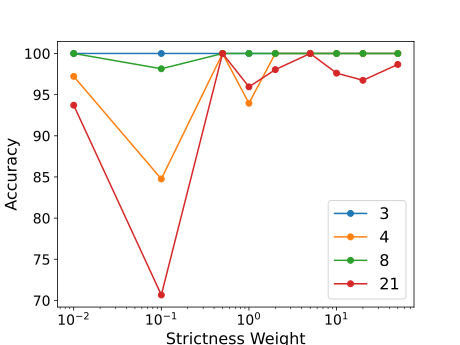
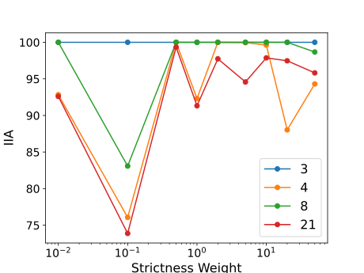
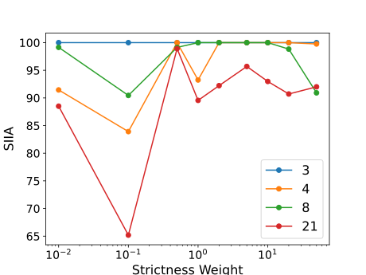
(a) Accuracy achieved after $10$ epochs for different values of $\text{Weight}_{SIIT}$.
(a) 在不同 $\text{Weight}_{SIIT}$ 取值下训练 $10$ 个轮次后达到的准确率。
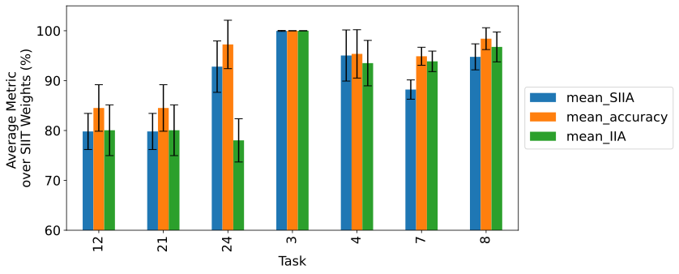
Figure 11: Average test metrics (SIIA, IIA, and accuracy) achieved after $20$ epochs for different values of $\text{Weight}_{SIIT}$ in the SIIT algorithm, for $7$ randomly selected cases. The accuracies plotted are averaged over $10$ different seeds. The standard deviations of the metrics are shown as error bars. Not all the cases in this plot achieve $100\%$ on the test metrics. We can see that the variance is usually dependent on the case: for some cases, the variance is very low ($\approx 0$-$1\%$), while for others it is high ($\approx 4$-$5\%$), independent of the test metric.
图 11：对于随机选取的 $7$ 个案例，SIIT 算法在不同 $\text{Weight}_{SIIT}$ 取值下训练 $20$ 个轮次后达到的平均测试指标（SIIA、IIA 和准确率）。图中绘制的准确率是对 $10$ 个不同随机种子的结果取平均得到的。各指标的标准差以误差条表示。图中并非所有案例的测试指标都达到 $100\%$。可以看出，方差通常取决于具体案例：某些案例的方差很低（$\approx 0$-$1\%$），而另一些案例的方差则较高（$\approx 4$-$5\%$），且与测试指标无关。
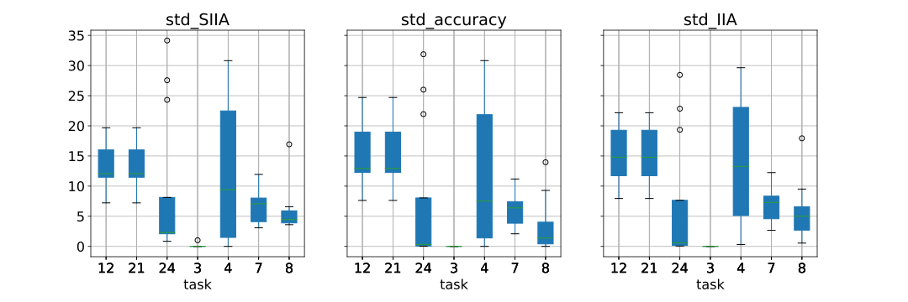
Figure 12: Boxplots showing the standard deviation of test metrics (SIIA, IIA, and accuracy) when varying the seed for different values of $\text{Weight}_{SIIT}$ in the SIIT algorithm, for $7$ randomly selected cases. Again, this variance is usually dependent on the case: for some cases, the variance is very low, while for others it is very high, independent of the test metric.
图 12：对于随机选取的 $7$ 个案例，箱线图展示了 SIIT 算法在不同 $\text{Weight}_{SIIT}$ 取值下改变随机种子时，测试指标（SIIA、IIA 和准确率）的标准差。同样，这种方差通常取决于具体案例：某些案例的方差很低，而另一些案例的方差则很高，且与测试指标无关。
Figure 10 displays the results of a sweep experiment analysing the sensitivity of the SIIT algorithm to the $\text{Weight}_{SIIT}$ hyperparameter. This experiment is conducted with $10$ epochs max on $4$ randomly selected cases. We find that, on average, the best results are achieved when the $\text{Weight}_{SIIT}$ is set to half the value of the other weights ($\text{Weight}_{IIT}$ and $\text{Weight}_{behavior}$), as the accuracy, IIA, and SIIA metrics are the highest at this point. Values below this threshold lead to a decrease in the SIIA metric, while values above it lead to a decrease in the IIA metric. Overall, the sensitivity of the SIIT algorithm to the $\text{Weight}_{SIIT}$ hyperparameter seems to be higher below $0.5$, with a decrease on the tests metrics of up to $20\%$, and lower above $0.5$, with a decrease between $0\%$ and $10\%$.
图 10 展示了一项扫描实验的结果，该实验分析了 SIIT 算法对 $\text{Weight}_{SIIT}$ 超参数的敏感性。该实验在随机选取的 $4$ 个案例上进行，最多训练 $10$ 个轮次。我们发现，平均而言，当 $\text{Weight}_{SIIT}$ 设为其他权重（$\text{Weight}_{IIT}$ 和 $\text{Weight}_{behavior}$）数值的一半时，结果最佳，因为此时准确率、IIA 和 SIIA 指标均达到最高值。低于这一阈值会导致 SIIA 指标下降，而高于这一阈值则会导致 IIA 指标下降。总体而言，当 $\text{Weight}_{SIIT}$ 低于 $0.5$ 时，SIIT 算法对该超参数的敏感性似乎较高，测试指标的降幅最高可达 $20\%$；当其高于 $0.5$ 时，敏感性较低，降幅介于 $0\%$ 和 $10\%$ 之间。
Figure 11 complements the previous figure by showing the average test metrics achieved after $20$ epochs for different values of $\text{Weight}_{SIIT}$ in the SIIT algorithm, along with their variance, for $7$ randomly selected cases. We see that depending on the case the variance can be very low or very high, independent of the test metric. This indicates that the sensitivity of the SIIT algorithm to the $\text{Weight}_{SIIT}$ hyperparameter is case-dependent. We see a standard deviation of $8.07$ on SIIA, $9.37$ on IIA, and $7.04$ on accuracy, on average across all cases. We note that not all the cases in this plot achieve $100\%$ on the test metrics after $20$ epochs.
图 11 对前一幅图作了补充，展示了随机选取的 $7$ 个案例中，SIIT 算法在不同 $\text{Weight}_{SIIT}$ 取值下训练 $20$ 个轮次后取得的平均测试指标及其方差。我们看到，因案例而异，方差可能很低，也可能很高，与具体的测试指标无关。这表明，SIIT 算法对 $\text{Weight}_{SIIT}$ 超参数的敏感性取决于具体案例。对所有案例取平均后，SIIA 的标准差为 $8.07$，IIA 的标准差为 $9.37$，准确率的标准差为 $7.04$。我们注意到，图中并非所有案例在训练 $20$ 个轮次后都能在测试指标上达到 $100\%$。
Finally, Figure 12 shows the standard deviation of test metrics (SIIA, IIA, and accuracy) when varying the seed for different values of $\text{Weight}_{SIIT}$ in the SIIT algorithm. We see a similar pattern to the previous figures, with the variance being usually dependent on the case: for some cases, the variance is very low, while for others it is very high, independent of the test metric.
最后，图 12 展示了 SIIT 算法在不同 $\text{Weight}_{SIIT}$ 取值下改变随机种子时，测试指标（SIIA、IIA 和准确率）的标准差。我们观察到与前几幅图类似的模式，即方差通常取决于具体案例：某些案例的方差很低，而另一些案例的方差很高，与具体的测试指标无关。
Appendix B Thorough evaluation of dataset models附录 B 数据集模型的全面评估
Tables 1, 2 and 3 provide detailed versions of the data shown in Figure 5, for the main $16$ SIIT models in the benchmark, using interchange interventions, mean ablations and zero ablations, respectively. The main takeaway from the interchange intervention and mean ablations is that nodes not in the circuit have zero or very close to zero effect, while nodes in the circuit have a much higher effect. On the other hand, zero ablations indicate that there are nodes not in the circuit with significant effects.
表 1、2 和 3 分别使用互换干预、均值消融和零值消融，详细列出了图 5 中所示的基准中主要的 $16$ 个 SIIT 模型的数据。互换干预和均值消融的主要结论是，电路外节点的影响为零或非常接近零，而电路内节点的影响则大得多。另一方面，零值消融表明，某些电路外节点具有显著影响。
Table 4 shows the accuracy of the main $16$ SIIT models after mean and zero ablating all the nodes that are not in the circuit. Some of the cases in this table present a big drop in accuracy, specially the regression tasks, while the classification tasks are more robust. This is expected since regression tasks are more sensitive with respect to the output logits, as we compare using an absolute tolerance (atol) and do not use the argmax function that is used in classification tasks. We also note that using either mean or zero ablations on many nodes at the same time can easily throw the model’s activations off-distribution, which is a common issue also present in models found in the wild.
表 4 展示了对所有电路外节点进行均值消融和零值消融后，主要的 $16$ 个 SIIT 模型的准确率。表中某些案例的准确率大幅下降，尤其是回归任务，而分类任务则更为稳健。这符合预期，因为回归任务对输出 logits 更为敏感，这是由于我们使用绝对容差（atol）进行比较，而不使用分类任务中采用的 argmax 函数。我们还注意到，同时对许多节点进行均值消融或零值消融，很容易使模型的激活偏离原有分布，这也是实际场景中的模型普遍存在的问题。
As a reference, we present in Figure 13 the variation of accuracy for case 3’s SIIT model, as a function of the absolute tolerance (atol) value for comparing outputs. Most of the logits returned by the SIIT model are at a distance between $0.1$ and $0.5$ from the original outputs, which is why the accuracy is very low for atol values below $0.1$, but quickly jumps to $28.9\%$ at $0.1$, and then to $84.1\%$ at $0.25$.
作为参考，我们在图 13 中展示了案例 3 的 SIIT 模型的准确率随输出比较所用绝对容差（atol）取值的变化情况。SIIT 模型返回的大多数 logits 与原始输出之间的距离介于 $0.1$ 和 $0.5$ 之间，因此，当 atol 小于 $0.1$ 时，准确率很低，但在 atol 为 $0.1$ 时迅速跃升至 $28.9\%$，随后在 atol 为 $0.25$ 时升至 $84.1\%$。
Furthermore, we also studied the relationship between each node’s average activation norm and the Pearson correlation coefficient between the outputs of logit lens applied to that node and the model’s actual output. Although many nodes are correlated, most of the ones not in the circuit with a high zero ablation effect have very low variances and norms. For example Case 3 final layer attention hook $3$, has an effect $0.42$ and norm $1.51\pm 0.55$. However, there are still some nodes worth noting, such as the one for final layer’s MLP in Case 11, with effect $0.11$ and normalised activation norm $1.33\pm 0.55$. We leave further investigation of these nodes for future work, as its role is not very well understood at the moment. Interactive plots for this analysis can be found online .
此外，我们还研究了每个节点的平均激活范数与一个 Pearson 相关系数之间的关系，该相关系数衡量的是对该节点应用 logit 透镜所得输出与模型实际输出之间的相关性。尽管许多节点具有相关性，但在零值消融下影响较大的电路外节点中，大多数节点的方差和范数都很低。例如，案例 3 中最后一层的注意力钩子 $3$ 的影响为 $0.42$，范数为 $1.51\pm 0.55$。不过，仍有一些节点值得关注，例如案例 11 中最后一层的 MLP 节点，其影响为 $0.11$，归一化激活范数为 $1.33\pm 0.55$。由于目前尚未充分理解这些节点的作用，我们将对它们的进一步研究留待未来开展。该分析的交互式图可在线获取。
We present more detailed information on realism in Figure 14, where we plot the accuracy of the SIIT (trained to $100\%$ SIIA), Tracr and “natural” models for $3$ randomly selected cases after mean ablating the nodes rejected by ACDC over different thresholds. These plots show that the SIIT models have a closer behavior to the “natural” models than the Tracr models, which is consistent with the results presented in Section 5. To normalise error from a larger number of edges, we train “natural” and SIIT models with the same architecture of its corresponding Tracr model. We use an identity alignment map to train SIIT models in this case. Figure 15 shows this same information in a more aggregated way, by plotting the average accuracy of the circuit across ACDC thresholds for Tracr, SIIT, and “naturally” trained transformers on the main $16$ tasks.
我们在图 14 中提供了有关真实性的更详细信息，其中绘制了在不同阈值下对 ACDC 排除的节点进行均值消融后，SIIT（训练至 $100\%$ SIIA）、Tracr 和“自然”模型在 $3$ 个随机选取的案例上的准确率。这些图表表明，与 Tracr 模型相比，SIIT 模型的行为更接近“自然”模型，这与第 5 节中给出的结果一致。为对更多边所带来的误差进行归一化，我们采用与相应 Tracr 模型相同的架构来训练“自然”模型和 SIIT 模型。在这种情况下，我们使用恒等对齐映射来训练 SIIT 模型。图 15 以更为汇总的方式展示了相同的信息，绘制了 Tracr、SIIT 和“自然”训练的 Transformer 在主要的 $16$ 个任务上、跨 ACDC 阈值的电路平均准确率。
We also perform a more detailed comparison of the weights between SIIT, IIT, Tracr, and “natural” models. Figure 16 displays an extended version of Figure 2, now including IIT, and Table 6 shows the KL divergence between the weight histograms of each type of model for Case 3. Unsurprisingly, both SIIT and IIT weights are closer to “natural” weights than Tracr ones.
我们还对 SIIT、IIT、Tracr 和“自然”模型的权重进行了更详细的比较。图 16 展示了图 2 的扩展版本，新增了 IIT，表 6 则展示了案例 3 中各类模型权重直方图之间的 KL 散度。不出所料，与 Tracr 权重相比，SIIT 和 IIT 的权重都更接近“自然”权重。
Finally, Table 6 expands on Figure 8 by showing the correlation coefficients for SIIT, IIT, Tracr, and “natural” models. Although we see a high correlation for both IIT and SIIT models, we see that the correlation is slightly higher for IIT models. This is likely because of all the nodes that are not restricted using resample ablations, as is the case for SIIT. We also note that the difference in signals between SIIT and IIT is very small in both Table 6 and Table 6 to make any substantial claims here. More sophisticated analyses may provide insights into SIIT models’ realism and are left for future work.
最后，表 6 通过展示 SIIT、IIT、Tracr 和“自然”模型的相关系数，对图 8 作了扩展。尽管 IIT 和 SIIT 模型均表现出较高的相关性，但 IIT 模型的相关性略高。这可能是因为 IIT 中存在一些节点，并未像 SIIT 中那样受到重采样消融的约束。我们还注意到，在表 6 和表 6 中，SIIT 与 IIT 之间的信号差异都非常小，不足以据此作出任何实质性论断。更精细的分析或许能为 SIIT 模型的真实性提供深入见解，这将留待未来研究。
Table 1: Detailed statistics for the effect on accuracy of nodes in the circuit and nodes out of the circuit, for the main $16$ SIIT models in the benchmark, measured using the node effect equation described in Section 5. We consider that the intervention has changed the output for regression models when the new output differs by $0.05$ or more, and for classification models when the new output is simply different from the original output. We can see that nodes not in the circuit have zero or very close to zero effect, while nodes in the circuit have a much higher effect.
表 1：基准中主要的 $16$ 个 SIIT 模型的电路内节点和电路外节点对准确率影响的详细统计，采用第 5 节所述的节点效应方程进行测量。对于回归模型，当新输出与原始输出相差 $0.05$ 或以上时，我们认为干预改变了输出；对于分类模型，只要新输出与原始输出不同，我们就认为干预改变了输出。可以看到，电路外节点的效应为零或非常接近零，而电路内节点的效应则大得多。
| Case 案例 | $\text{Weight}_{SIIT}$ | Nodes in circuit 电路内节点 | Nodes not in circuit 电路外节点 | ||
| Quartiles 四分位数 | Range 范围 | Quartiles 四分位数 | Range 范围 | ||
| \csvreader[late after line= | |||||
| \csvcolvi |
Table 2: Detailed statistics for the effect on accuracy of nodes in the circuit and nodes out of the circuit, for the main $16$ SIIT models in the benchmark, measured using mean ablations. The mean ablation technique differs from the interchange ablation in that it replaces the activations of the target node with the mean activations for that node in the dataset. In other words, it does not use a different input to replace the activations of the target node. Mean ablation is a robustness check for the SIIT models in InterpBench, which were trained with interchange ablations. We consider that the intervention has changed the output for regression models when the new output differs by $0.05$ or more, and for classification models when the new output is simply different from the original output. We can see that nodes not in the circuit have zero or very close to zero effect, while nodes in the circuit have a much higher effect.
表 2：基准中主要的 $16$ 个 SIIT 模型的电路内节点和电路外节点对准确率影响的详细统计，采用均值消融进行测量。均值消融技术与交换消融的区别在于，它将目标节点的激活替换为该节点在数据集上的平均激活。换言之，它不使用另一个输入来替换目标节点的激活。均值消融用于检验 InterpBench 中 SIIT 模型的稳健性，这些模型采用交换消融进行训练。对于回归模型，当新输出与原始输出相差 $0.05$ 或以上时，我们认为干预改变了输出；对于分类模型，只要新输出与原始输出不同，我们就认为干预改变了输出。可以看到，电路外节点的效应为零或非常接近零，而电路内节点的效应则大得多。
| Case 案例 | $\text{Weight}_{SIIT}$ | Nodes in circuit 电路内节点 | Nodes not in circuit 电路外节点 | ||
| Quartiles 四分位数 | Range 范围 | Quartiles 四分位数 | Range 范围 | ||
| \csvreader[late after line= | |||||
| \csvcolvi | \csvcolii | \csvcoliii | \csvcoliv | \csvcolv |
Table 3: Detailed statistics for the effect on accuracy of nodes in the circuit and nodes out of the circuit, for the main $16$ SIIT models in the benchmark, measured using zero ablations. The zero ablation technique differs from the interchange ablation in that it replaces the activations of the target node with zeros. Zero ablation is a robustness check for the SIIT models in InterpBench, which were trained with interchange ablations, although it is a more aggressive intervention and can potentially throw off the distribution of the model’s activations. We consider that the intervention has changed the output for regression models when the new output differs by $0.05$ or more, and for classification models when the new output is simply different from the original output. Unlike mean and resample ablations, where we see little to no effects from nodes that are not in the circuit, significant effects can be seen when using zero ablations.
表 3：基准中主要的 $16$ 个 SIIT 模型的电路内节点和电路外节点对准确率影响的详细统计，采用置零消融进行测量。置零消融技术与交换消融的区别在于，它将目标节点的激活替换为零。置零消融用于检验 InterpBench 中 SIIT 模型的稳健性，这些模型采用交换消融进行训练，但置零消融是一种更强烈的干预，可能扰乱模型的激活分布。对于回归模型，当新输出与原始输出相差 $0.05$ 或以上时，我们认为干预改变了输出；对于分类模型，只要新输出与原始输出不同，我们就认为干预改变了输出。在均值消融和重采样消融中，电路外节点几乎没有效应或完全没有效应，而在使用置零消融时，可以观察到显著的效应。
| Case 案例 | $\text{Weight}_{SIIT}$ | Nodes in circuit 电路内节点 | Nodes not in circuit 电路外节点 | ||
| Quartiles 四分位数 | Range 范围 | Quartiles 四分位数 | Range 范围 | ||
| \csvreader[late after line= | |||||
| \csvcolvi | \csvcolii | \csvcoliii | \csvcoliv | \csvcolv |
Table 4: Accuracy of the main $16$ SIIT models after mean and zero ablating all the nodes that are not in the ground truth circuit. We consider that the ablation has changed the output for regression models when the new output differs by $0.05$ or more, and for classification models when the new output is simply different from the original output. We can see that there is a big drop in accuracy for models performing regression tasks, while the models performing classification tasks are more robust. It is worth noting that using both mean and zero ablations on many nodes at the same time can be a very aggressive intervention and throw off the distribution of the model’s activations. We expect realistic models to face similar issues.
表 4：对主要的 $16$ 个 SIIT 模型中所有不属于真实电路的节点进行均值消融和零值消融后的准确率。对于回归模型，当新输出与原始输出之差达到或超过 $0.05$ 时，我们认为消融改变了输出；对于分类模型，只要新输出与原始输出不同，我们就认为消融改变了输出。可以看到，执行回归任务的模型准确率大幅下降，而执行分类任务的模型则更为稳健。值得注意的是，同时对多个节点进行均值消融或零值消融都可能构成非常强烈的干预，并扰乱模型的激活分布。我们预计实际模型也会面临类似问题。
| Case 案例 | Task type 任务类型 | Mean ablation accuracy 均值消融准确率 | Zero ablation accuracy 零值消融准确率 |
| \csvreader[late after line= | |||
| \csvcoliv | \csvcolii | \csvcoliii |
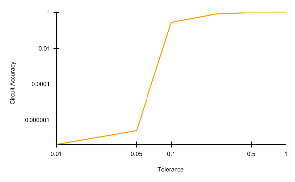
Figure 13: Variation of accuracy for case 3’s SIIT model, when mean ablating all the nodes that are not in the ground truth circuit, and varying the absolute tolerance (atol) for deciding if an output has changed. For atol values below $0.1$, the accuracy is very low, close to zero, but it quickly jumps to $28.9\%$ at $0.1$. There is a rotund change between $0.1$ and $0.25$, where the accuracy jumps to $84.1\%$, and finally, at $0.5$, the accuracy reaches $98.9\%$. This means around $29\%$ of the logits returned by the SIIT model are at a distance closer than $0.1$ from the original outputs, $85\%$ are at a distance closer than $0.25$, and $99\%$ are at a distance closer than $0.5$.
图 13：对案例 3 的 SIIT 模型中所有不属于真实电路的节点进行均值消融，并改变用于判断输出是否发生变化的绝对容差（atol）时，准确率的变化情况。当 atol 小于 $0.1$ 时，准确率非常低，接近于零，但在 $0.1$ 时迅速跃升至 $28.9\%$。在 $0.1$ 到 $0.25$ 之间出现了显著变化，准确率跃升至 $84.1\%$，最后在 $0.5$ 时达到 $98.9\%$。这意味着，SIIT 模型返回的 logits 中，约 $29\%$ 与原始输出的距离小于 $0.1$，$85\%$ 的距离小于 $0.25$，$99\%$ 的距离小于 $0.5$。
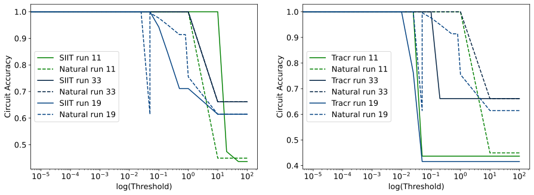
Figure 14: Accuracy of the SIIT, Tracr and “natural” models for $3$ randomly selected cases after mean ablating the nodes rejected by ACDC over different thresholds. On the left, we have only SIIT and “natural” models, and on the right, we have only Tracr and “natural” models. The lines in this figure show that the SIIT models have a closer behavior to the “natural” models than the Tracr ones.
图 14：在不同阈值下，对 ACDC 排除的节点进行均值消融后，随机选取的 $3$ 个案例中 SIIT、Tracr 和“自然”模型的准确率。左图仅包含 SIIT 和“自然”模型，右图仅包含 Tracr 和“自然”模型。图中的曲线表明，与 Tracr 模型相比，SIIT 模型的行为更接近“自然”模型。
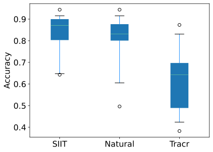
Figure 15: Average accuracy of circuit across ACDC thresholds, for Tracr, SIIT, and “naturally” trained transformers on the main $16$ tasks. The scores in each boxplot show the accuracy of models after mean-ablating all the nodes that are not a part of ACDC’s hypothesis, averaged across multiple thresholds, for each task. SIIT and Natural scores are clearly the most similar.
图 15：在主要的 $16$ 项任务上，Tracr、SIIT 和“自然”训练的 Transformer 的电路在不同 ACDC 阈值下的平均准确率。每个箱线图中的分数表示：对于每项任务，对所有不属于 ACDC 假设电路的节点进行均值消融后，模型在多个阈值下的平均准确率。SIIT 和 Natural 的分数显然最为接近。
Table 5: KL divergence between weight histograms of each type of model for Case 3. The models trained had the same number of nodes, with an identity correspondence. The weights are centered before computing the KL divergence between the distributions. Both SIIT and IIT weights are closer to “natural” weights than Tracr ones.
表 5：案例 3 中各类模型权重直方图之间的 KL 散度。所训练的模型具有相同的节点数，且节点之间存在恒等对应关系。在计算分布之间的 KL 散度之前，先对权重进行中心化处理。与 Tracr 权重相比，SIIT 和 IIT 权重都更接近“自然”权重。
| Natural | Tracr | SIIT | IIT | |
| Natural | 0.00 | - | - | - |
| Tracr | 6.87 | 0.00 | - | - |
| SIIT | 0.16 | 9.83 | 0.00 | - |
| IIT | 0.12 | 9.89 | 0.04 | 0.00 |
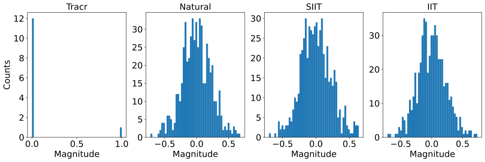
Figure 16: Extended version of Figure 2, now including IIT. We can see that the plots are indistinguishable between SIIT, IIT, and Natural weight matrices.
图 16：图 2 的扩展版本，增加了 IIT。可以看到，SIIT、IIT 和 Natural 权重矩阵的绘图结果无法区分。
Appendix C Evaluating IOI circuit in GPT-2 small附录 C 评估 GPT-2 small 中的 IOI 电路
Many popular circuit discovery techniques benchmark their methods with the IOI circuit [43]. We present an analysis of GPT2-small’s node effect (Section 5) on $10{,}000$ samples of the IOI dataset we used to train our model (Table 7 and Figure 17). We can see that some nodes not in the circuit have a higher effect than some nodes in the circuit, further stressing the need for InterpBench. We use the exact same circuit ACDC [12] used as their ground truth (Figure 2 of [43]).
许多流行的电路发现技术使用 IOI 电路 [43] 对其方法进行基准评测。我们在用于训练模型的 IOI 数据集的 $10{,}000$ 个样本上，分析了 GPT2-small 的节点效应（第 5 节）（表 7 和图 17）。可以看到，一些不属于该电路的节点比某些属于该电路的节点具有更高的效应，这进一步凸显了对 InterpBench 的需求。我们使用的电路与 ACDC [12] 用作真实电路的电路完全相同（[43] 的图 2）。
It is worth pointing out that we do not consider Layer 0’s MLP (with an effect of $0.999$) in this analysis, since Wang et al. [43] do not study it. The ground truth circuit ACDC uses in its evaluation also does not label this as ‘in the circuit’. We note that this particular node is problematic given its unclear label and high node effect.
值得指出的是，我们在此分析中未考虑第 0 层的 MLP（其效应为 $0.999$），因为 Wang et al. [43] 未对其进行研究。ACDC 在评估中使用的真实电路也未将其标记为“属于电路”。我们注意到，该节点的标签不明确且节点效应较高，因此存在问题。
Table 7: Statistics of the resample ablation scores for nodes in the IOI circuit and not in the IOI circuit of GPT-2 small (except Layer 0’s MLP). Compared to Table 1, the overall effect of nodes are much lower for this circuit. This indicates that the circuit may be more spread out/have more redundancies. However, the nodes not in circuit have effects much higher than both SIIT models and the nodes that are in this IOI circuit.
表 7：GPT-2 small 中属于和不属于 IOI 电路的节点的重采样消融分数统计量（第 0 层的 MLP 除外）。与表 1 相比，该电路中节点的整体效应要低得多。这表明该电路可能分布得更为分散，或具有更多冗余。然而，不属于电路的节点的效应远高于 SIIT 模型中的节点，也远高于属于该 IOI 电路的节点。
| Mean 均值 | Standard Deviation 标准差 | Quartiles 四分位数 | Range 极差 | |
| in circuit 属于电路 | $0.028$ | $0.041$ | $0.008$ - $0.014$ - $0.024$ | $0.001$ - $0.162$ |
| not in circuit 不属于电路 | $0.009$ | $0.007$ | $0.007$ - $0.008$ - $0.008$ | $0.002$ - 0.071 |
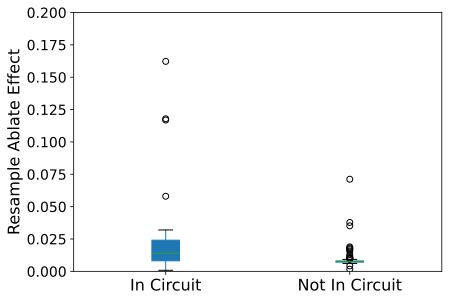
Figure 17: Boxplot of the resample ablation scores for nodes in the IOI circuit and not in the IOI circuit of GPT-2 small (except Layer 0’s MLP). We can clearly see some nodes not in the circuit are causally responsible here.
图 17：GPT-2 small 中属于和不属于 IOI 电路的节点的重采样消融分数箱线图（第 0 层的 MLP 除外）。可以清楚地看到，一些不属于该电路的节点在此具有因果作用。
Appendix D Evaluation of circuit discovery techniques附录 D 电路发现技术的评估
In this work we compare the performance of the following circuit discovery techniques: Automated Circuit DisCovery (ACDC), Subnetwork Probing (SP), Edgewise SP, Edge Attribution Patching (EAP), and EAP using integrated gradients (EAP-IG). ACDC traverses the transformer’s computational graph in reverse topological order, iteratively assigning scores to edges and pruning them if their score falls below a certain threshold. EAP assigns scores to all edges at the same time by leveraging gradient information, and again prunes edges below a certain threshold to form the final circuit. EAP-IG uses integrated gradients to smooth out the approximation of gradients and improve the performance of EAP. SP learns, via gradient descent, a mask for each node in the circuit to determine if it is part of the circuit or not, and encourages this mask to be sparse by adding a sparseness term to the loss function. The strength of this sparse penalty is controlled by a regularization hyperparameter. Edgewise SP is a variation of SP that learns a mask for each edge in the transformer model instead of each node.
在本研究中，我们比较了以下电路发现技术的性能：自动电路发现（ACDC）、子网络探测（SP）、逐边 SP、边归因修补（EAP），以及使用积分梯度的 EAP（EAP-IG）。ACDC 按逆拓扑顺序遍历 Transformer 的计算图，迭代地为边评分，并在边的得分低于某一阈值时将其剪除。EAP 利用梯度信息同时为所有边评分，同样通过剪除得分低于某一阈值的边来形成最终电路。EAP-IG 使用积分梯度来平滑梯度近似，并提高 EAP 的性能。SP 通过梯度下降为电路中的每个节点学习一个掩码，以确定该节点是否属于电路，并通过在损失函数中添加稀疏项来促使掩码稀疏。该稀疏惩罚的强度由一个正则化超参数控制。逐边 SP 是 SP 的一种变体，它为 Transformer 模型中的每条边而非每个节点学习一个掩码。
We use different metrics for each task in the benchmark, depending on whether it is a regression or classification task. For ACDC, SP and Edgewise SP, we use the $L_{2}$ distance for regression tasks and the Kullback-Leibler divergence for classification tasks. For EAP and EAP-IG, we use the Mean Absolute Error (MAE) for regression tasks and the cross-entropy loss for classification tasks.
我们根据基准中每项任务属于回归任务还是分类任务，使用不同的指标。对于 ACDC、SP 和逐边 SP，我们对回归任务使用 $L_{2}$ 距离，对分类任务使用 Kullback-Leibler 散度。对于 EAP 和 EAP-IG，我们对回归任务使用平均绝对误差（MAE），对分类任务使用交叉熵损失。
Since each of these techniques can be configured to be more or less aggressive, i.e. to prune more or fewer nodes/edges, we compare their performance using the Area Under the Curve (AUC) of ROC curves. We compute the True Positive Rate (TPR) and False Positive Rate (FPR) for the ROC curves by comparing the discovered circuits with the ground truth circuits, which we have by construction in InterpBench.
由于上述每种技术均可通过配置调整剪枝的激进程度，即剪除更多或更少的节点或边，因此我们使用 ROC 曲线的曲线下面积（AUC）来比较其性能。我们将发现的电路与真实电路进行比较，以计算 ROC 曲线的真阳性率（TPR）和假阳性率（FPR）；在 InterpBench 中，真实电路在构建时即已确定。
In order for this comparison to be sound we need to be more specific on the granularity at which we perform the evaluation. All of the techniques mentioned above work at the QKV granularity level, and thus they consider the outputs of the Q, K, and V matrices in attention heads and the output of MLP components as nodes in the computational graph. On the other hand, SIIT models are trained at the attention head level, without putting a constraint on the head subcomponents, which means that the trained models can solve the required tasks via QK circuits, OV circuits, or a combination of both [14]. Thus, during the evaluation of the circuit discovery techniques, we promote the QKV nodes to heads on both the discovered circuits and the ground truth circuits. In other words, if for example the output of a Q matrix in an attention head is part of the circuit, we consider the whole attention head to be part of it as well.
为了确保这一比较合理，我们需要更明确地说明评估所采用的粒度。上述所有技术都在 QKV 粒度上运行，因此，它们将注意力头中 Q、K 和 V 矩阵的输出以及 MLP 组件的输出视为计算图中的节点。另一方面，SIIT 模型在注意力头粒度上进行训练，且不对头的子组件施加约束，这意味着训练后的模型可以通过 QK 电路、OV 电路或二者的组合来完成所需任务 [14]。因此，在评估电路发现技术时，我们将发现的电路和真实电路中的 QKV 节点均提升至头的粒度。换言之，例如，如果某个注意力头中 Q 矩阵的输出属于电路，我们也将整个注意力头视为该电路的一部分。
Additionally, when calculating the edge ROC curves for SP, we consider an edge to be part of the circuit if both of its nodes are part of the circuit. This is a simplification, but it allows us to compare regular SP with the rest of the techniques, which work at the edge level.
此外，在计算 SP 的边 ROC 曲线时，如果一条边的两个端点节点均属于电路，我们就将该边视为电路的一部分。这是一种简化，但它使我们能够将常规 SP 与其余在边粒度上运行的技术进行比较。
Table 8 shows all the p-values for the Wilcoxon-Mann-Whitney U-test on each pair of circuit discovery techniques, for the comparison of the AUC of ROC curves. Table 9 shows the Vargha-Delaney $\hat{A}_{12}$ effect size values for the same comparison.
表 8 给出了针对每对电路发现技术进行 Wilcoxon-Mann-Whitney U 检验所得的全部 p 值，用于比较 ROC 曲线的 AUC。表 9 给出了同一比较的 Vargha-Delaney $\hat{A}_{12}$ 效应量值。
Table 8: Wilcoxon-Mann-Whitney U-test p-values for the comparison of the AUC of ROC curves for the different circuit discovery techniques. We use $\alpha=0.05$ as the significance level. The p-values below this level are marked in bold, which means that we can reject the null hypothesis that the two techniques being compared have the same distribution of AUC values. I.e., we can say that the AUC values are significantly different.
表 8：用于比较不同电路发现技术的 ROC 曲线 AUC 的 Wilcoxon-Mann-Whitney U 检验 p 值。我们使用 $\alpha=0.05$ 作为显著性水平。低于该水平的 p 值以粗体标出，这意味着我们可以拒绝所比较的两种技术具有相同 AUC 值分布的原假设。即，我们可以认为 AUC 值存在显著差异。
| ACDC | Node SP | Edge SP | EAP | EAP-IG | |
| ACDC | - | $\mathbf{0.000427}$ | $\mathbf{0.028417}$ | $\mathbf{0.000061}$ | $0.099481$ |
| Node SP | - | - | $\mathbf{0.015503}$ | $\mathbf{0.000153}$ | $\mathbf{0.000979}$ |
| Edge SP | - | - | - | $\mathbf{0.000031}$ | $0.307821$ |
| EAP | - | - | - | - | $\mathbf{0.000648}$ |
Table 9: Vargha-Delaney $\hat{A}_{12}$ effect size values for the comparison of the AUC of ROC curves for the different circuit discovery techniques. The values are interpreted as follows: $0.56<\hat{A}_{12}<0.64$ is considered small, $0.64<\hat{A}_{12}<0.71$ is considered medium, and $\hat{A}_{12}>0.71$ is considered large.
表 9：用于比较不同电路发现技术的 ROC 曲线 AUC 的 Vargha-Delaney $\hat{A}_{12}$ 效应量值。这些值的解释如下：$0.56<\hat{A}_{12}<0.64$ 视为小效应，$0.64<\hat{A}_{12}<0.71$ 视为中等效应，$\hat{A}_{12}>0.71$ 视为大效应。
| ACDC | Node SP | Edge SP | EAP | EAP-IG | |
| ACDC | - | $0.742$ | $0.541$ | $0.91$ | $0.555$ |
| Node SP | - | - | $0.355$ | $0.844$ | $0.316$ |
| Edge SP | - | - | - | $0.887$ | $0.486$ |
| EAP | - | - | - | - | $0.111$ |
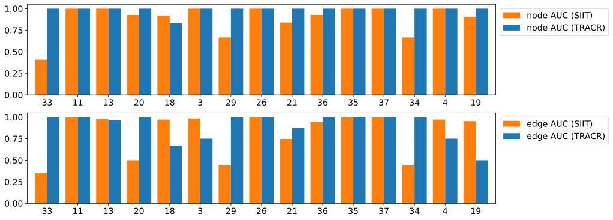
Figure 18: Node and edge AUROC achieved by ACDC on SIIT and Tracr models. ACDC achieved a higher or same node AUROC on Tracr models for almost all cases, and a higher or same edge AUROC on Tracr models for all but $5$ cases.
图 18：ACDC 在 SIIT 和 Tracr 模型上取得的节点 AUROC 和边 AUROC。在几乎所有情况下，ACDC 在 Tracr 模型上取得的节点 AUROC 均更高或相同；除 $5$ 种情况外，其在 Tracr 模型上取得的边 AUROC 均更高或相同。
Appendix E Benchmark and license details附录 E 基准与许可证详情
The code repository for our benchmark can be found here: https://github.com/FlyingPumba/InterpBench, and it is licensed under the MIT license. The trained models can be found here: https://huggingface.co/cybershiptrooper/InterpBench, and they are licensed under CC-BY. The benchmark’s code is hosted on GitHub and the trained models are hosted on HuggingFace. We will ensure that both are available for a long time. For that purpose, we have minted DOIs for both the code repository and the trained models. The DOI for the code repository is 10.5281/zenodo.11518575 and the DOI for the trained models is 10.57967/hf/2451.
本基准的代码仓库位于：https://github.com/FlyingPumba/InterpBench，并采用 MIT 许可证。训练好的模型位于：https://huggingface.co/cybershiptrooper/InterpBench，并采用 CC-BY 许可证。基准代码托管于 GitHub，训练好的模型托管于 HuggingFace。我们将确保二者长期可用。为此，我们已为代码仓库和训练好的模型分别分配了 DOI。代码仓库的 DOI 为 10.5281/zenodo.11518575，训练好的模型的 DOI 为 10.57967/hf/2451。
The intended use of this benchmark is to evaluate the effectiveness of mechanistic interpretability techniques. The training and evaluation procedures can be found in our code repository and are described in Sections 4 and 5. The code repository also contains instructions on how to replicate the empirical results presented in this work. The benchmark we provide does not contain any offensive content. We, the authors, bear all responsibility to withdraw our paper and data in case of violation of licensing or privacy rights.
本基准旨在用于评估机制可解释性技术的有效性。训练和评估流程可在我们的代码仓库中找到，第 4 节和第 5 节也对其进行了描述。代码仓库还包含复现本文所报告实证结果的说明。我们提供的基准不包含任何冒犯性内容。如存在违反许可条款或侵犯隐私权的情况，我们作为作者承担撤回论文和数据的全部责任。
We provide several structured metadata files for our benchmark, all available in HuggingFace’s repository:
我们为本基准提供了若干结构化元数据文件，均可在 HuggingFace 仓库中获取：
• A Croissant metadata record.
• 一条 Croissant 元数据记录。
• A CSV file listing the metadata for all cases in the benchmark.
• 一个 CSV 文件，列出了基准中所有案例的元数据。
• A Parquet file listing the metadata for all cases in the benchmark.
• 一个 Parquet 文件，列出了基准中所有案例的元数据。
• A JSON file listing the metadata for all cases in the benchmark.
• 一个 JSON 文件，列出了基准中所有案例的元数据。
Appendix F Benchmark usage附录 F 基准的使用
The trained models hosted on HuggingFace are organized in directories, each one corresponding to a case in the benchmark, containing the following files:
托管于 HuggingFace 的训练好的模型按目录组织，每个目录对应基准中的一个案例，并包含以下文件：
• ll_model.pth: A serialized PyTorch state dictionary for the trained transformer model.
• ll_model.pth：训练好的 Transformer 模型的序列化 PyTorch 状态字典。
• ll_model_cfg.pkl: Pickle file containing the architecture config for the trained transformer model.
• ll_model_cfg.pkl：包含训练好的 Transformer 模型架构配置的 Pickle 文件。
• meta.json: JSON file with hyperparameters used for training for the model.
• meta.json：包含模型训练所用超参数的 JSON 文件。
• edges.pkl: Pickle file containing labels for the circuit, i.e., list of all the edges that are a part of the ground truth circuit.
• edges.pkl：包含回路标签的 Pickle 文件，即真实回路中所有边的列表。
These models can be loaded using TransformerLens, a popular Python library for Mechanistic Interpretability on transformers:
这些模型可使用 TransformerLens 加载，这是一个广泛使用的、用于 Transformer 机制可解释性研究的 Python 库：
More details of usage are provided in the GitHub repository.
更多使用细节见 GitHub 仓库。
Appendix G InterpBench Tracr tasks used for the evaluation附录 G 用于评估的 InterpBench Tracr 任务
Table 10 displays the main $16$ Tracr tasks included in InterpBench that were used for this article’s evaluation (Section 5).
表 10 展示了 InterpBench 中包含的、用于本文评估（第 5 节）的主要 $16$ 个 Tracr 任务。
Table 10: A description of the main $16$ Tracr tasks included in InterpBench. Task type is either “Cls” (classification) or “Reg” (regression).
表 10：InterpBench 中包含的主要 $16$ 个 Tracr 任务的描述。任务类型为“Cls”（分类）或“Reg”（回归）。
| Case 案例 | Type 类型 | Description 描述 | Code 代码 |
| 3 | Reg | Returns the fraction of ’x’ in the input up to the i-th position for all i. 对于所有 i，返回输入中截至第 i 个位置的部分中 ’x’ 所占的比例。 | Link 链接 |
| 4 | Reg | Return fraction of previous open tokens minus the fraction of close tokens. 返回此前左括号词元的比例减去右括号词元的比例。 | Link 链接 |
| 8 | Cls | Identity. 恒等映射。 | Link 链接 |
| 11 | Cls | Counts the number of words in a sequence based on their length. 根据单词长度统计序列中的单词数量。 | Link 链接 |
| 13 | Cls | Analyzes the trend (increasing, decreasing, constant) of numeric tokens. 分析数值词元的变化趋势（递增、递减、不变）。 | Link 链接 |
| 18 | Cls | Classify each token based on its frequency as ’rare’, ’common’, or ’frequent’. 根据每个词元的出现频率，将其归类为“稀有”“常见”或“高频”。 | Link 链接 |
| 19 | Cls | Removes consecutive duplicate tokens from a sequence. 移除序列中连续重复的词元。 | Link 链接 |
| 20 | Cls | Detect spam messages based on appearance of spam keywords. 根据垃圾信息关键词的出现情况检测垃圾信息。 | Link 链接 |
| 21 | Cls | Extract unique tokens from a string. 从字符串中提取互不重复的词元。 | Link 链接 |
| 26 | Cls | Creates a cascading effect by repeating each token in sequence incrementally. 按递增次数重复序列中的各个词元，从而产生级联效果。 | Link 链接 |
| 29 | Cls | Creates abbreviations for each token in the sequence. 为序列中的每个词元生成缩写。 | Link 链接 |
| 33 | Cls | Checks if each token’s length is odd or even. 检查每个词元的长度是奇数还是偶数。 | Link 链接 |
| 34 | Cls | Calculate the ratio of vowels to consonants in each word. 计算每个单词中元音字母与辅音字母的数量之比。 | Link 链接 |
| 35 | Cls | Alternates capitalization of each character in words. 将单词中的各个字符交替设置为大写和小写。 | Link 链接 |
| 36 | Cls | Classifies each token as ’positive’, ’negative’, or ’neutral’ based on emojis. 根据表情符号，将每个词元归类为“正面”“负面”或“中性”。 | Link 链接 |
| 37 | Cls | Reverses each word in the sequence except for specified exclusions. 将序列中除指定排除项之外的每个单词反转。 | Link 链接 |
Appendix H InterpBench Tracr tasks not used for the evaluation附录 H 未用于评估的 InterpBench Tracr 任务
Table 11 displays the new $69$ tasks included in InterpBench after this article’s evaluation: $10$ models trained on more Tracr circuits generated by us (as described in Section 4) and $59$ models trained on TracrBench circuits [41].
表 11 展示了本文评估完成后新增至 InterpBench 的 $69$ 个任务：$10$ 个模型使用我们生成的更多 Tracr 回路进行训练（如第 4 节所述），$59$ 个模型使用 TracrBench 回路 [41] 进行训练。
For the training of these new models, we used a slight variation of the Algorithm 1, as suggested by Anders et al. [1]. In this variation, the three different losses are summed into a single one and used for gradient descent:
在训练这些新模型时，我们按照 Anders et al. [1] 的建议，对算法 1 进行了轻微调整。在这一变体中，将三种不同的损失相加为单一损失，并用于梯度下降：
This removes the need of updating the weights three times in the original algorithm and, more importantly, improves training stability by considering the minima for only one landscape instead of three. To further help the optimizer converge when using a single loss function we decreased the Beta coefficients to $(0.9,0.9)$.
这消除了原算法中需要更新权重三次的要求，更重要的是，通过仅考虑一个损失曲面而非三个损失曲面的极小值，提高了训练稳定性。为进一步帮助优化器在使用单一损失函数时收敛，我们将 Beta 系数降低至 $(0.9,0.9)$。
Additionally, the calculation of Strictness loss was improved: instead of sampling and intervening on only one non-aligned low-level variable $V^{L}$, we now sample each non-aligned low-level variable with $50\%$ probability, and intervene on all of them at the same time:
此外，我们改进了严格性损失的计算：此前仅采样一个未对齐的低层变量 $V^{L}$ 并对其进行干预，现在则以 $50\%$ 的概率采样每个未对齐的低层变量，并同时对所有采样得到的变量进行干预：
This discourages the model from learning backup behavior, where the non-aligned nodes that are not intervened on become active and help the model achieve a lower loss.
这会抑制模型学习后备行为，即未受到干预的未对齐节点变得活跃，并帮助模型获得更低损失的行为。
Finally, learning rate is now linearly decreased from $10^{-3}$ to $2\times 10^{-4}$ over the course of training. We have also experimented with other combinations of $SIIT$, $IIT$ and behavior weights, and longer epochs (up to $3{,}000$).
最后，学习率现改为在训练过程中从 $10^{-3}$ 线性降低至 $2\times 10^{-4}$。我们还尝试了 $SIIT$、$IIT$ 和行为权重的其他组合，以及更多的训练轮数（最多 $3{,}000$ 轮）。
Table 11: A description of the new $59$ tasks that were included in InterpBenchafter this article’s evaluation. Task type is either “Cls” (classification) or “Reg” (regression). The columns for validation metrics, Accuracy, Interchange Intervention Accuracy (IIA), and Strict Interchange Intervention Accuracy (SIIA) show the latest value after training.
表 11：本文评估完成后纳入 InterpBench 的 $59$ 个新任务的描述。任务类型为“Cls”（分类）或“Reg”（回归）。验证指标各列，即准确率、互换干预准确率（IIA）和严格互换干预准确率（SIIA），显示训练后的最新值。
| Case 案例 | TracrBench? 是否属于 TracrBench？ | Type 类型 | Acc 准确率 | IIA | SIIA | Description 描述 | Code 代码 |
| 2 | No | Cls | 100 | 99.978 | 99.996 | Reverse the input sequence. 将输入序列逆序排列。 | Link 链接 |
| 7 | No | Cls | 100 | 99.919 | 99.623 | Returns the number of times each token occurs in the input. 返回每个词元在输入中出现的次数。 | Link 链接 |
| 14 | No | Cls | 100 | 100 | 99.942 | Returns the count of ’a’ in the input sequence. 返回输入序列中 ‘a’ 的数量。 | Link 链接 |
| 15 | No | Cls | 100 | 100 | 99.993 | Returns each token multiplied by two and subtracted by its index. 返回每个词元乘以二后减去其索引的结果。 | Link 链接 |
| 19 | No | Cls | 100 | 100.000 | 100.000 | Removes consecutive duplicate tokens from a sequence. 移除序列中连续重复的词元。 | Link 链接 |
| 24 | No | Cls | 100 | 100.000 | 99.915 | Identifies the first occurrence of each token in a sequence. 识别序列中每个词元首次出现的位置。 | Link 链接 |
| 25 | No | Cls | 99.989 | 99.900 | 99.965 | Normalizes token frequencies in a sequence to a range between 0 and 1. 将序列中词元的频率归一化至 0 到 1 的范围内。 | Link 链接 |
| 30 | No | Cls | 100 | 100 | 99.964 | Tags numeric tokens in a sequence based on whether they fall within a given range. 根据数值词元是否落在给定范围内，对序列中的数值词元进行标记。 | Link 链接 |
| 31 | No | Cls | 100 | 100 | 100 | Identify if tokens in the sequence are anagrams of the word ’listen’. 识别序列中的词元是否为单词 ‘listen’ 的字母重排形式。 | Link 链接 |
| 39 | No | Reg | 100 | 100.000 | 99.977 | Returns the fraction of ’x’ in the input up to the i-th position for all i (longer sequence length). 对于所有 i，返回输入中截至第 i 个位置的 ‘x’ 所占比例（序列长度更长）。 | Link 链接 |
| 40 | Yes 是 | Cls | 100 | 100.000 | 99.999 | Sum the last and previous to last digits of a number 将一个数的末位数字与倒数第二位数字相加 | Link 链接 |
| 41 | Yes 是 | Cls | 100 | 99.997 | 99.931 | Make each element of the input sequence absolute 对输入序列中的每个元素取绝对值 | Link 链接 |
| 43 | Yes 是 | Cls | 100 | 100 | 99.982 | Returns the corresponding Fibonacci number for each element in the input sequence. 返回输入序列中每个元素对应的 Fibonacci 数。 | Link 链接 |
| 44 | Yes 是 | Cls | 99.989 | 99.976 | 99.939 | Replaces each element with the number of elements greater than it in the sequence 将每个元素替换为序列中大于该元素的元素数量 | Link 链接 |
| 45 | Yes 是 | Cls | 100 | 99.938 | 99.997 | Doubles the first half of the sequence 将序列前半部分的元素加倍 | Link 链接 |
| 46 | Yes 是 | Cls | 100 | 100 | 99.999 | Decrements each element in the sequence by 1 将序列中的每个元素减去 1 | Link 链接 |
| 49 | Yes 是 | Cls | 100 | 100 | 99.959 | Decrements each element in the sequence until it becomes a multiple of 3. 递减序列中的每个元素，直至其成为 3 的倍数。 | Link 链接 |
| 50 | Yes 是 | Cls | 100 | 100 | 99.999 | Applies the hyperbolic cosine to each element 对每个元素应用双曲余弦函数 | Link 链接 |
| 51 | Yes 是 | Cls | 100 | 100 | 99.997 | Checks if each element is a Fibonacci number 检查每个元素是否为 Fibonacci 数 | Link 链接 |
| 52 | Yes 是 | Cls | 100 | 100 | 99.999 | Takes the square root of each element. 对每个元素取平方根。 | Link 链接 |
| 53 | Yes 是 | Cls | 100 | 99.943 | 99.978 | Increment elements at odd indices by 1 将奇数索引处的元素增加 1 | Link 链接 |
| 54 | Yes 是 | Cls | 100 | 100 | 99.999 | Applies the hyperbolic tangent to each element. 对每个元素应用双曲正切函数。 | Link 链接 |
| 55 | Yes 是 | Cls | 100 | 100 | 99.999 | Applies the hyperbolic sine to each element. 对每个元素应用双曲正弦函数。 | Link 链接 |
| 56 | Yes 是 | Cls | 100 | 100 | 100 | Sets every third element to zero. 将每第三个元素置零。 | Link 链接 |
| 58 | Yes 是 | Cls | 99.994 | 99.979 | 99.991 | Mirrors the first half of the sequence to the second half. 将序列的前半部分镜像复制到后半部分。 | Link 链接 |
| 60 | Yes 是 | Cls | 100 | 100 | 99.999 | Increment each element in the sequence by 1. 将序列中的每个元素增加 1。 | Link 链接 |
| 62 | Yes 是 | Cls | 100 | 100 | 99.938 | Replaces each element with its factorial. 将每个元素替换为其阶乘。 | Link 链接 |
| 63 | Yes 是 | Cls | 99.964 | 99.901 | 99.920 | Replaces each element with the number of elements less than it in the sequence. 将每个元素替换为序列中小于该元素的元素数量。 | Link 链接 |
| 64 | Yes 是 | Cls | 100 | 100 | 99.999 | Cubes each element in the sequence. 对序列中的每个元素取立方。 | Link 链接 |
| 65 | Yes 是 | Cls | 100 | 100 | 99.999 | Calculate the cube root of each element in the input sequence. 计算输入序列中每个元素的立方根。 | Link 链接 |
| 66 | Yes 是 | Cls | 100 | 100 | 99.983 | Round each element in the input sequence to the nearest integer. 将输入序列中的每个元素舍入到最接近的整数。 | Link 链接 |
| 67 | Yes 是 | Cls | 100 | 99.952 | 99.992 | Multiply each element of the sequence by the length of the sequence. 将序列中的每个元素乘以序列长度。 | Link 链接 |
| 68 | Yes 是 | Cls | 100 | 100 | 100.000 | Increment each element until it becomes a multiple of 3 递增每个元素，直至其成为 3 的倍数 | Link 链接 |
| 69 | Yes 是 | Cls | 100 | 100 | 100 | "Assign -1, 0, or 1 to each element of the input sequence based on its sign." “根据输入序列中每个元素的符号，将其赋值为 -1、0 或 1。” | Link 链接 |
| 70 | Yes 是 | Cls | 100 | 100 | 100 | Apply the cosine function to each element of the input sequence. 对输入序列中的每个元素应用余弦函数。 | Link 链接 |
| 71 | Yes 是 | Cls | 100 | 99.964 | 100.000 | Divide each element by the length of the sequence 将每个元素除以序列长度 | Link 链接 |
| 72 | Yes 是 | Cls | 100 | 99.961 | 99.916 | Negate each element in the input sequence. 对输入序列中的每个元素取相反数。 | Link 链接 |
| 73 | Yes 是 | Cls | 100 | 100 | 99.966 | Apply the sine function to each element of the input sequence. 对输入序列中的每个元素应用正弦函数。 | Link 链接 |
| 75 | Yes 是 | Cls | 100 | 100 | 99.999 | Double each element of the input sequence. 将输入序列中的每个元素加倍。 | Link 链接 |
| 77 | Yes 是 | Cls | 100 | 99.999 | 99.906 | Apply the tangent function to each element of the sequence. 对序列中的每个元素应用正切函数。 | Link 链接 |
| 79 | Yes 是 | Cls | 100 | 100 | 100 | Check if each number in a sequence is prime 检查序列中的每个数是否为素数 | Link 链接 |
| 80 | Yes 是 | Cls | 100 | 100 | 99.999 | Subtract a constant from each element of the input sequence. 从输入序列中的每个元素减去一个常数。 | Link 链接 |
| 82 | Yes 是 | Cls | 100 | 99.961 | 100 | Halve the elements in the second half of the sequence. 将序列后半部分的元素减半。 | Link 链接 |
| 83 | Yes 是 | Cls | 100 | 100 | 99.999 | Triple each element in the sequence. 将序列中的每个元素乘以三。 | Link 链接 |
| 84 | Yes 是 | Cls | 100 | 100 | 99.999 | Apply the arctangent function to each element of the input sequence. 对输入序列中的每个元素应用反正切函数。 | Link 链接 |
| 85 | Yes 是 | Cls | 100 | 100 | 99.999 | Square each element of the input sequence. 对输入序列中的每个元素取平方。 | Link 链接 |
| 86 | Yes 是 | Cls | 100 | 100 | 99.984 | "Check if each element is a power of 2. Return 1 if true, otherwise 0." “检查每个元素是否为 2 的幂。若是，则返回 1，否则返回 0。” | Link 链接 |
| 87 | Yes 是 | Cls | 100 | 100 | 99.988 | Binarize a sequence of integers using a threshold. 使用阈值对整数序列进行二值化。 | Link 链接 |
| 90 | Yes 是 | Cls | 100 | 100 | 99.972 | Replaces a specific token with another one. 将特定词元替换为另一个词元。 | Link 链接 |
| 91 | Yes 是 | Cls | 100 | 100.000 | 99.992 | Set all values below a threshold to 0 将所有低于阈值的值设为 0 | Link 链接 |
| 95 | Yes 是 | Cls | 100 | 100 | 99.947 | Counts the distinct prime factors of each number in the input list. 统计输入列表中每个数的不同素因子的数量。 | Link 链接 |
| 93 | Yes 是 | Cls | 100 | 99.985 | 99.999 | Swaps the nth with the n+1th element if n%2==1. 若 n%2==1，则交换第 n 个元素与第 n+1 个元素。 | Link 链接 |
| 97 | Yes 是 | Cls | 100 | 99.907 | 100.000 | Scale a sequence by its maximum element. 根据序列中的最大元素对序列进行缩放。 | Link 链接 |
| 101 | Yes 是 | Cls | 100 | 100 | 99.985 | Check if each element is a square of an integer. 检查每个元素是否为某个整数的平方。 | Link 链接 |
| 102 | Yes 是 | Cls | 100 | 100 | 99.983 | "Reflects each element within a range (default is [2, 7])." “在给定范围内对每个元素进行反射变换（默认范围为 [2, 7]）。” | Link 链接 |
| 103 | Yes 是 | Cls | 100 | 99.918 | 99.995 | Swap consecutive numbers in a list 交换列表中相邻的数 | Link 链接 |
| 104 | Yes 是 | Cls | 100 | 100 | 99.999 | Apply exponential function to all elements of the input sequence. 对输入序列中的所有元素应用指数函数。 | Link 链接 |
| 105 | Yes 是 | Cls | 100 | 100 | 99.916 | Replaces each number with the next prime after that number. 将每个数替换为大于该数的下一个素数。 | Link 链接 |
| 106 | Yes 是 | Cls | 100 | 100 | 99.981 | Sets all elements to zero except for the element at index 1. 将索引为 1 的元素以外的所有元素置零。 | Link 链接 |
| 111 | Yes 是 | Cls | 100 | 99.964 | 99.943 | Returns the last element of the sequence and pads the rest with zeros. 返回序列的最后一个元素，并在其余位置填充零。 | Link 链接 |
| 122 | Yes 是 | Cls | 100 | 100 | 99.970 | Check if each number is divisible by 3. 检查每个数是否能被 3 整除。 | Link 链接 |
| 129 | Yes 是 | Cls | 100 | 100 | 100 | Checks if all elements are a multiple of n (set the default at 2). 检查所有元素是否均为 n 的倍数（将默认值设为 2）。 | Link 链接 |
| 130 | Yes 是 | Cls | 100 | 99.976 | 99.980 | "Clips each element to be within a range (make the default range [2, 7])." “将每个元素裁剪至给定范围内（将默认范围设为 [2, 7]）。” | Link 链接 |
| 114 | Yes 是 | Cls | 100 | 99.985 | 99.951 | Apply a logarithm base 10 to each element of the input sequence. 对输入序列中的每个元素取以 10 为底的对数。 | Link 链接 |
| 110 | Yes 是 | Cls | 100 | 100 | 99.961 | "Inserts zeros between each element, removing the latter half of the list." “在各元素之间插入零，并移除列表的后半部分。” | Link 链接 |
| 113 | Yes 是 | Cls | 100 | 99.945 | 99.998 | "Inverts the sequence if it is sorted in ascending order, otherwise leaves it unchanged." “若序列按升序排列，则将其逆序，否则保持不变。” | Link 链接 |
| 121 | Yes 是 | Cls | 100 | 99.996 | 99.992 | Compute arcsine of all elements in the input sequence. 计算输入序列中所有元素的反正弦值。 | Link 链接 |
| 124 | Yes 是 | Cls | 100 | 100 | 100 | Check if all elements in a list are equal. 检查列表中的所有元素是否相等。 | Link 链接 |
| 123 | Yes 是 | Cls | 100 | 99.961 | 99.916 | Apply arccosine to each element of the input sequence. 对输入序列中的每个元素应用反余弦函数。 | Link 链接 |